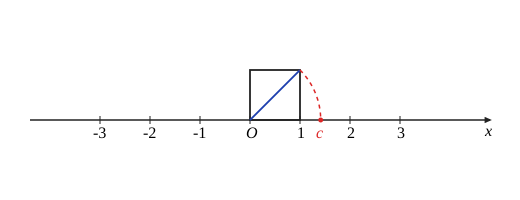
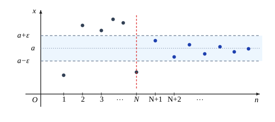
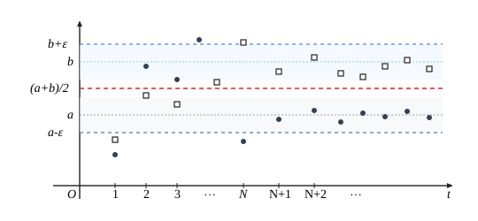

第二章 数列极限
§1 实数系的连续性
实数系
数学分析讨论的是实变量之间的函数关系. 换言之，在数学分析中，变量的取值范围是限制在实数集合内的，因此有必要首先了解实数集合 $\mathbb{R}$ 的一个重要的基本性质——连续性.
我们先来考察一下数系的扩充历史.
人类对数的认识是从自然数开始的. 若一个集合中的任意两个元素进行了某种运算后，所得的结果仍属于这个集合，我们称该集合对这种运算是封闭的. 显然，任意两个自然数 $m, n \in \mathbb{N}$，其和与积必定还是自然数：$m+n \in \mathbb{N}, mn \in \mathbb{N}$，即自然数集合 $\mathbb{N}$ 对于加法与乘法运算是封闭的. 但是 $\mathbb{N}$ 对于减法运算并不封闭，即任意两个自然数之差不一定是自然数.
当数系由自然数集合扩充到整数集合 $\mathbb{Z}$ 后，关于加法、减法和乘法运算都封闭了，即对于任意两个整数 $p, q \in \mathbb{Z}$，其和、差、积必定还是整数：$p \pm q \in \mathbb{Z}, pq \in \mathbb{Z}$. 但是，整数集 $\mathbb{Z}$ 关于除法运算是不封闭的，因此数系又由整数集合 $\mathbb{Z}$ 扩充为有理数集合 $\mathbb{Q} = \left\{ x \;\middle|\; x = \dfrac{q}{p}, p \in \mathbb{N}^*, q \in \mathbb{Z} \right\}$. 显然，有理数集合 $\mathbb{Q}$ 关于加法、减法、乘法与除法四则运算都是封闭的.
让我们从几何直观上来分析一下. 取一水平直线，在上面取定一个原点 $O$，再在 $O$ 的右方取一点 $A$，以线段 $OA$ 作为单位长度，这样就建立了一个坐标轴. 在这个坐标轴上，整数集合 $\mathbb{Z}$ 的每一个元素都能找到自己的对应点，这些点称为整数点. 因为它们之间的最小间隔为 1，我们称整数系 $\mathbb{Z}$ 具有“离散性”.
显然，有理数集合 $\mathbb{Q}$ 的每一个元素 $\dfrac{q}{p}$（$p \in \mathbb{N}^*, q \in \mathbb{Z}$）也都能在这坐标轴上找到自己的对应点，这些点称为有理点. 容易知道，在坐标轴的任意一段长度大于 0 的线段上，总存在无穷多个有理点. 换句话说，在坐标轴上不存在有理点的“真空”地带，我们称有理数系 $\mathbb{Q}$ 具有“稠密性”.
既然有理数系 $\mathbb{Q}$ 是稠密的，粗粗想来，它似乎已经是完美的了，其实不然. 比如说，
若用 $c$ 表示边长为 1 的正方形的对角线的长度，这个 $c$ 就无法用有理数来表示. 这可以通过反证法来论证：根据勾股定理，$c^2 = 2$. 若 $c = \dfrac{q}{p}$，其中 $p, q \in \mathbb{N}^*$ 并且 $p, q$ 互素，那么 $q^2 = 2p^2$. 由于奇数的平方必为奇数，因此 $q$ 是偶数. 设 $q = 2r, r \in \mathbb{N}^*$，又得到 $p^2 = 2r^2$，也就是说 $p$ 也是偶数. 这就与 $p, q$ 互素的假设发生矛盾，所以 $c$ 不是有理数. 换句话说，有理数集合 $\mathbb{Q}$ 对于开方运算是不封闭的.
所以，有理点虽然在坐标轴上密密麻麻，但并没有布满整条直线，其中留有许多“空隙”，如与单位正方形对角线长度 $c$ 对应的点就位于有理点集合的“空隙”中（如图 2.1.1）.

注意到有理数一定能表示成有限小数或无限循环小数，很自然会想到，扩充有理数集合 $\mathbb{Q}$ 最直接的方式之一，就是把所有的无限不循环小数（称为无理数）吸纳进来. 我们将全体有理数和全体无理数所构成的集合称为实数集 $\mathbb{R}$：
$$ \mathbb{R} = \{ x \mid x \text{ 是有理数或无理数} \}. $$下面将会了解，全体无理数所对应的点（称为无理点）确实填补了有理点在坐标轴上的所有“空隙”，即实数铺满了整个数轴. 这样，每个实数都可以在坐标轴上找到自己的对应点，而坐标轴上的每个点又可以通过自己的坐标表示惟一一个实数. 实数集合的这一性质称为实数系 $\mathbb{R}$ 的“连续性”. 为了强调实数系所特有的这种连续性，$\mathbb{R}$ 又被称为实数连续统，而那条表示实数全体的坐标轴又称为数轴.
实数系的连续性是分析学的基础，对于我们将要学习的极限论、微积分乃至整个分析学具有无比的重要性. 可以说，正是因为有了连续性，实数系才成为数学分析课程的“舞台”.
实数系 $\mathbb{R}$ 的连续性，从几何角度理解，就是实数全体布满整个数轴而没有“空隙”，但从分析学角度阐述，则有多种相互等价的表述方式. 在本节中将要讲述的“确界存在定理”就是实数系 $\mathbb{R}$ 连续性的表述之一.
最大数与最小数
下面我们讨论实数集 $\mathbb{R}$ 的各种子集，简称为数集.
为了表达上的方便，引入两个记号：“$\exists$”表示“存在”或“可以找到”，“$\forall$”表示“对于任意的”或“对于每一个”. 例如
$$ \begin{aligned} A \subset B &\iff \forall x \in A, \text{有 } x \in B, \\ A \not\subset B &\iff \exists x \in A, \text{使得 } x \,\bar{\in}\, B. \end{aligned} $$设 $S$ 是一个数集，如果 $\exists \xi \in S$，使得 $\forall x \in S$，有 $x \le \xi$，则称 $\xi$ 是数集 $S$ 的最大数，记为 $\xi = \max S$；如果 $\exists \eta \in S$，使得 $\forall x \in S$，有 $x \ge \eta$，则称 $\eta$ 是数集 $S$ 的最小数，记为 $\eta = \min S$.
当数集 $S$ 是非空有限集，即 $S$ 只含有有限个数时，$\max S$ 与 $\min S$ 显然存在，且
$\max S$ 是这有限个数中的最大者，$\min S$ 是这有限个数中的最小者. 但是当 $S$ 是无限集时，最大数及最小数就有可能不存在.
用反证法. 假设集合 $B$ 有最大数，记为 $\beta$. 由 $\beta \in [0, 1)$，可知 $\beta' = \dfrac{1+\beta}{2} \in [0, 1)$. 但是 $\beta' > \beta$，这就与 $\beta$ 是集合 $B$ 的最大数发生矛盾. 所以集合 $B$ 没有最大数.
证毕上确界与下确界
设 $S$ 是一个非空数集，如果 $\exists M \in \mathbb{R}$，使得 $\forall x \in S$，有 $x \le M$，则称 $M$ 是 $S$ 的一个上界；如果 $\exists m \in \mathbb{R}$，使得 $\forall x \in S$，有 $x \ge m$，则称 $m$ 是 $S$ 的一个下界. 当数集 $S$ 既有上界，又有下界时，称 $S$ 为有界集. 显然
$$ S \text{ 为有界集} \iff \exists X > 0, \text{使得 } \forall x \in S, \text{有 } \lvert x \rvert \le X. $$设数集 $S$ 有上界，记 $U$ 为 $S$ 的上界全体所组成的集合，则显然 $U$ 不可能有最大数，下面将证明：$U$ 一定有最小数. 设 $U$ 的最小数为 $\beta$，就称 $\beta$ 为数集 $S$ 的上确界，即最小上界，记为
$$ \beta = \sup S. $$从上面的叙述，可知上确界 $\beta$ 满足下述两个性质：
1. $\beta$ 是数集 $S$ 的上界：$\forall x \in S$，有 $x \le \beta$；
2. 任何小于 $\beta$ 的数不是数集 $S$ 的上界：$\forall \varepsilon > 0$，$\exists x \in S$，使得 $x > \beta - \varepsilon$.
又假若数集 $S$ 有下界，记 $L$ 为 $S$ 的下界全体所组成的集合，则显然 $L$ 不可能有最小数，同样可以证明：$L$ 一定有最大数. 设 $L$ 的最大数为 $\alpha$，就称 $\alpha$ 为数集 $S$ 的下确界，即最大下界，记为
$$ \alpha = \inf S. $$类似地，下确界 $\alpha$ 满足下述两个性质：
1. $\alpha$ 是数集 $S$ 的下界：$\forall x \in S$，有 $x \ge \alpha$；
2. 任何大于 $\alpha$ 的数不是数集 $S$ 的下界：$\forall \varepsilon > 0$，$\exists x \in S$，使得 $x < \alpha + \varepsilon$.
由例 1.2.11 和例 1.2.12，任何一个实数 $x$ 可表示成
$$ x = [x] + (x), $$其中 $[x]$ 表示 $x$ 的整数部分，$(x)$ 表示 $x$ 的非负小数部分. 我们将 $(x)$ 表示成无限小数的形式：
$$ (x) = 0.a_1 a_2 \cdots a_n \cdots, $$其中 $a_1, a_2, \cdots, a_n, \cdots$ 中的每一个都是数字 $0, 1, 2, \cdots, 9$ 中的一个，若 $(x)$ 是有限小数，则在后面接上无限个 0. 这称为实数的无限小数表示. 注意无限小数 $0.a_1 a_2 \cdots a_n 000\cdots$（$a_n \ne 0$）与无限小数 $0.a_1 a_2 \cdots (a_n - 1)999\cdots$ 是相等的，为了保持表示的惟一性，我们约定在 $(x)$ 的无限小数表示中不出现后者. 这样，任何一个实数集 $S$ 就可以由一个确定
的无限小数的集合来表示：
$$ \{ a_0 + 0.a_1 a_2 \cdots a_n \cdots \mid a_0 = [x], \; 0.a_1 a_2 \cdots a_n \cdots = (x), \; x \in S \}. $$设数集 $S$ 有上界，则可令 $S$ 中元素的整数部分的最大者为 $\alpha_0$（$\alpha_0$ 一定存在，否则的话，$S$ 就不可能有上界），并记
$$ S_0 = \{ x \mid x \in S \text{ 并且 } [x] = \alpha_0 \}. $$显然 $S_0$ 不是空集，并且对于任意 $x \in S$，只要 $x \in S_0$，就有 $x < \alpha_0 + 1$.
再考察数集 $S_0$ 中元素的无限小数表示中第一位小数的数字，令它们中的最大者为 $\alpha_1$，并记
$$ S_1 = \{ x \mid x \in S_0 \text{ 并且 } x \text{ 的第一位小数为 } \alpha_1 \}. $$显然 $S_1$ 也不是空集，并且对于任意 $x \in S$，只要 $x \in S_1$，就有 $x < \alpha_0 + 0.\alpha_1$.
一般地，考察数集 $S_{n-1}$ 中元素的无限小数表示中第 $n$ 位小数的数字，令它们中的最大者为 $\alpha_n$，并记
$$ S_n = \{ x \mid x \in S_{n-1} \text{ 并且 } x \text{ 的第 } n \text{ 位小数为 } \alpha_n \}. $$显然 $S_n$ 也不是空集，并且对于任意 $x \in S$，只要 $x \in S_n$，就有 $x < \alpha_0 + 0.\alpha_1 \alpha_2 \cdots \alpha_n$.
不断地做下去，我们得到一列非空数集 $S \supset S_0 \supset S_1 \supset \cdots \supset S_n \supset \cdots$，和一列数 $\alpha_0, \alpha_1, \alpha_2, \cdots, \alpha_n, \cdots$，满足
$$ \alpha_0 \in \mathbb{Z}; \quad \alpha_k \in \{ 0, 1, 2, \cdots, 9 \}, \; k \in \mathbb{N}^*. $$令 $\beta = \alpha_0 + 0.\alpha_1 \alpha_2 \cdots \alpha_n \cdots$，下面我们分两步证明 $\beta$ 就是数集 $S$ 的上确界.
（1）设 $x \in S$，则或者存在整数 $n_0 \ge 0$，使得 $x \in S_{n_0}$，或者对任何整数 $n \ge 0$ 有 $x \in S_n$. 若 $x \in S_{n_0}$，便有
$$ x < \alpha_0 + 0.\alpha_1 \alpha_2 \cdots \alpha_{n_0} \le \beta; $$若 $x \in S_n$（$\forall n \in \mathbb{N}$），由 $S_n$ 的定义并逐个比较 $x$ 与 $\beta$ 的整数部分及每一位小数，即知 $x = \beta$. 所以对任意的 $x \in S$，有 $x \le \beta$，即 $\beta$ 是数集 $S$ 的上界.
（2）对于任意给定的 $\varepsilon > 0$，只要将自然数 $n_0$ 取得充分大，便有 $\dfrac{1}{10^{n_0}} < \varepsilon$. 取 $x_0 \in S_{n_0}$，则 $\beta$ 与 $x_0$ 的整数部分及前 $n_0$ 位小数是相同的，所以
$$ \beta - x_0 \le \frac{1}{10^{n_0}} < \varepsilon, $$即 $x_0 > \beta - \varepsilon$，即任何小于 $\beta$ 的数 $\beta - \varepsilon$ 不是数集 $S$ 的上界.
同理可证非空有下界的数集必有下确界.
证毕注意在上面的证明中，上确界 $\beta$ 的无限小数表示可能不符合我们的约定，例如 $S = \{ 0.9, 0.99, 0.999, \cdots \}$，则 $\beta = 0.999\cdots 9\cdots$. 但这并不影响我们的证明，事实上，我们关心的是上确界 $\beta$ 这样一个实数的存在性.
关于数集的上（下）确界有下述的惟一性定理：
定理的证明留给读者（见习题 5）.
确界存在定理反映了实数系连续性这一基本性质，这可以从几何上加以理解：假若实数全体不能布满整条数轴而留有“空隙”，则“空隙”左边的数集就没有上确界，“空隙”右边的数集就没有下确界. 比如，由于有理数集合 $\mathbb{Q}$ 在数轴上有“空隙”，它就不具备实数集合 $\mathbb{R}$ 所具有的“确界存在定理”，也就是说：$\mathbb{Q}$ 内有上（下）界的集合 $T$ 未必在 $\mathbb{Q}$ 内有它的上（下）确界.
用反证法. 假设 $T$ 在 $\mathbb{Q}$ 内有上确界，记 $\sup T = \dfrac{n}{m}$（$m, n \in \mathbb{N}^*$ 且 $m, n$ 互素），则显然有
$$ 1 < \left( \frac{n}{m} \right)^2 < 3. $$由于有理数的平方不可能等于 2，于是只有下述两种可能：
（1）$1 < \left( \dfrac{n}{m} \right)^2 < 2$：
记 $2 - \dfrac{n^2}{m^2} = t$，则 $0 < t < 1$. 令 $r = \dfrac{n}{6m}t$，显然 $\dfrac{n}{m} + r > 0$，$\dfrac{n}{m} + r \in \mathbb{Q}$. 由于 $r^2 = \dfrac{n^2}{36m^2}t^2 < \dfrac{1}{18}t$，及 $\dfrac{2n}{m}r = \dfrac{n^2}{3m^2}t < \dfrac{2}{3}t$，可以得到
$$ \left( \frac{n}{m} + r \right)^2 - 2 = r^2 + \frac{2n}{m}r - t < 0. $$这说明 $\dfrac{n}{m} + r \in T$，与 $\dfrac{n}{m}$ 是 $T$ 的上确界矛盾.
（2）$2 < \left( \dfrac{n}{m} \right)^2 < 3$：
记 $\dfrac{n^2}{m^2} - 2 = t$，则 $0 < t < 1$. 令 $r = \dfrac{n}{6m}t$，显然也有 $\dfrac{n}{m} - r > 0$，$\dfrac{n}{m} - r \in \mathbb{Q}$. 由于 $\dfrac{2n}{m}r = \dfrac{n^2}{3m^2}t < t$，可以得到
$$ \left( \frac{n}{m} - r \right)^2 - 2 = r^2 - \frac{2n}{m}r + t > 0. $$这说明 $\dfrac{n}{m} - r$ 也是 $T$ 的上界，与 $\dfrac{n}{m}$ 是 $T$ 的上确界矛盾.
由此得到结论：$T$ 在 $\mathbb{Q}$ 内没有上确界.
证毕附录 Dedekind 切割定理
在本节中，我们利用实数的无限小数表示，证明了确界存在定理——实数系连续性定理，但由于实数的无限小数表示的严格阐述需要用我们尚未学到的级数知识，上述证明有稍欠严格之嫌.
事实上，实数系连续性有多种等价的叙述方式，下面，我们改从有理数集的稠密性出发，介绍关于实数系连续性的另一个定理——Dedekind 定理.
Dedekind 是以有理数集合 $\mathbb{Q}$ 的切割为基础导出无理数定义，进而定义整个实数系的.
从逻辑上讲，对有理数集合 $\mathbb{Q}$ 的任何切割 $A/B$，下述四种情况有且仅有一种出现：
（1）集合 $A$ 有最大数 $a_0$，集合 $B$ 没有最小数；
（2）集合 $A$ 没有最大数，集合 $B$ 有最小数 $b_0$；
（3）集合 $A$ 没有最大数，集合 $B$ 没有最小数；
（4）集合 $A$ 有最大数 $a_0$，集合 $B$ 有最小数 $b_0$.
但情况（4）是不可能发生的. 因为根据切割的定义，可知 $a_0 < b_0$，而 $\dfrac{a_0 + b_0}{2}$ 显然也是 $\mathbb{Q}$ 中的有理数，由 $a_0 < \dfrac{a_0 + b_0}{2} < b_0$，即得到 $\dfrac{a_0 + b_0}{2}$ 既不属于 $A$，也不属于 $B$，这就与 $\mathbb{Q} = A \cup B$ 产生矛盾.
对情况（1），我们称切割 $A/B$ 确定了有理数 $a_0$；对情况（2），我们称切割 $A/B$ 确定了有理数 $b_0$；而对情况（3），由于切割 $A/B$ 没有确定任何有理数，即集合 $A$ 与 $B$ 之间存在一个“空隙”，因此有必要引进一个新的数（即无理数），作为这一切割的确定对象.
有理数中的四则运算可以通过以下方式移植到实数集合 $\mathbb{R}$ 上. 例如，加法运算定义如下：若 $c \in \mathbb{R}$ 由切割 $A_1/B_1$ 确定，$d \in \mathbb{R}$ 由切割 $A_2/B_2$ 确定，记
$$ A = \{ x_1 + x_2 \mid x_1 \in A_1, x_2 \in A_2 \}, \quad B = \mathbb{Q} - A. $$那么可以证明 $A, B$ 构成有理数集合 $\mathbb{Q}$ 的一个切割，因此切割 $A/B$ 确定了一个实数，定义这个实数为 $c + d$.
类似地，有理数中的大小关系也可以移植到实数集合 $\mathbb{R}$ 上. 例如，设 $c \in \mathbb{R}$，它由切割 $A/B$ 确定，若 $A$ 中存在大于零的数（有理数 1），则定义实数 $c > 0$. 对于任意 $c, d \in \mathbb{R}$，若 $c - d > 0$，则定义 $c > d$.
我们知道有理数集有稠密性，但没有连续性，即有理数之间有许多“空隙”. 下面叙述的 Dedekind 切割定理则将告诉我们，有理数集合加入了无理数后，就没有“空隙”了，也就是说，实数集 $\mathbb{R}$ 的任一切割，都不会出现上述的情况（3）.
设 $A$ 是 $\bar{A}$ 中所有有理数所构成的集合，$B$ 是 $\bar{B}$ 中所有有理数所构成的集合，则 $A/B$ 是有理数集合 $\mathbb{Q}$ 的一个切割. 由前面所述，对于切割 $A/B$，下述三种情况有且仅有一种出现：
（1）集合 $A$ 有最大数 $a_0$，集合 $B$ 没有最小数；
（2）集合 $A$ 没有最大数，集合 $B$ 有最小数 $b_0$；
（3）集合 $A$ 没有最大数，集合 $B$ 没有最小数.
对情况（1），可以证明此时 $a_0$ 也是集合 $\bar{A}$ 的最大数，而集合 $\bar{B}$ 没有最小数.
用反证法. 若有 $\bar{a} \in \bar{A}$，成立 $a_0 < \bar{a}$，则由有理数的稠密性，在区间 $(a_0, \bar{a})$ 中必存在有理数 $a$. 由 $a < \bar{a}$，
可知 $a \in A$，但 $a > a_0$ 与 $a_0$ 是 $A$ 的最大数发生矛盾. 这说明 $a_0$ 就是集合 $\bar{A}$ 的最大数.
对于任意的 $\bar{b} \in \bar{B}$，因为 $a_0 < b$，于是在区间 $(a_0, \bar{b})$ 中必存在有理数 $b$. 由 $a_0 < b$，可知 $b \in B$，但 $b < \bar{b}$，这说明集合 $B$ 没有最小数.
对情况（2），可类似证明此时 $b_0$ 也是集合 $\bar{B}$ 的最小数，而集合 $\bar{A}$ 没有最大数.
对情况（3），由定义 2，切割 $A/B$ 确定一个无理数，将该无理数记为 $c$，则对任意 $a \in A$ 与任意 $b \in B$，成立 $a < c < b$.
因为无理数 $c \in \mathbb{R} = \bar{A} \cup \bar{B}$，所以只有两种可能：或者 $c \in \bar{A}$，或者 $c \in \bar{B}$. 若 $c \in \bar{A}$，则 $c$ 必是 $\bar{A}$ 的最大数. 若不然则存在 $\bar{a} \in \bar{A}$，成立 $c < \bar{a}$. 在区间 $(c, \bar{a})$ 中取有理数 $a$，由 $a < \bar{a}$，可知 $a \in \bar{A}$，但由 $c < a$，又可知 $a \in B$，这就产生矛盾.
同理，若 $c \in \bar{B}$，则 $c$ 必是 $\bar{B}$ 的最小数.
综合情况（1）（2）（3），可知 Dedekind 定理成立.
证毕下面我们从 Dedekind 定理出发，给出定理 2.1.1（确界存在定理——实数系连续性定理）的另一证明：
设非空实数集合 $S$ 有上界，则令集合 $S$ 的上界全体所成的集合为 $\bar{B}$：
$$ \bar{B} = \{ y \mid y \ge t, \forall t \in S \}, $$并令 $\bar{B}$ 的补集为 $\bar{A}$：
$$ \bar{A} = \{ x \mid x \,\bar{\in}\, \bar{B} \}, $$于是 $\bar{A}/\bar{B}$ 构成了实数集 $\mathbb{R}$ 的一个切割. 由 Dedekind 定理，或者 $\bar{A}$ 有最大数，或者 $\bar{B}$ 有最小数.
对任意的 $x \in \bar{A}$，$x$ 不是集合 $S$ 的上界，即存在 $t \in S$，使得 $x < t$. 令 $x' = \dfrac{x+t}{2}$，则 $x < x' < t$，由 $x' < t$，可知 $x'$ 也不是集合 $S$ 的上界，于是 $x' \in \bar{A}$. 再由 $x < x'$，即知 $x$ 不是 $\bar{A}$ 的最大数. 所以，$\bar{A}$ 没有最大数.
由此证得 $\bar{B}$ 有最小数，也即集合 $S$ 必有最小上界，即上确界.
证毕习 题 2.1
-
1.
（1）证明 $\sqrt{6}$ 不是有理数；（2）$\sqrt{3} + \sqrt{2}$ 是不是有理数？
-
2.
求下列数集的最大数、最小数，或证明它们不存在：
（1）$A = \{ x \mid x \ge 0 \}$；（2）$B = \left\{ \sin x \;\middle|\; 0 < x < \dfrac{2\pi}{3} \right\}$；（3）$C = \left\{ \dfrac{n}{m} \;\middle|\; m, n \in \mathbb{N}^* \text{ 并且 } n < m \right\}$.
-
3.
$A, B$ 是两个有界集，证明：
（1）$A \cup B$ 是有界集；（2）$S = \{ x + y \mid x \in A, y \in B \}$ 也是有界集.
- 4. 设数集 $S$ 有上界，则数集 $T = \{ x \mid -x \in S \}$ 有下界，且 $\sup S = -\inf T$.
- 5. 证明有界数集的上下确界唯一.
- 6. 对任何非空数集 $S$，必有 $\sup S \ge \inf S$. 当 $\sup S = \inf S$ 时，数集 $S$ 有什么特点？
- 7. 证明非空有下界的数集必有下确界.
-
8.
设 $S = \{ x \mid x \in \mathbb{Q} \text{ 并且 } x^2 < 3 \}$，证明：
（1）$S$ 没有最大数与最小数；（2）$S$ 在 $\mathbb{Q}$ 内没有上确界与下确界.
§2 数列极限
数列与数列极限
数列是指按正整数编了号的一串数：
$$ x_1, x_2, \cdots, x_n, \cdots $$通常表示成 $\{ x_n \}$，其中 $x_n$ 称为该数列的通项. 在这个数列中，第一项（即第一个数）是 $x_1$，第二项是 $x_2$，$\cdots$，第 $n$ 项是 $x_n$ 等等.
下面是一些简单的数列的例子：
$$ \left\{ \frac{1}{n} \right\}: 1, \frac{1}{2}, \frac{1}{3}, \cdots, \frac{1}{n}, \cdots; $$ $$ \left\{ \frac{n}{n+3} \right\}: \frac{1}{4}, \frac{2}{5}, \frac{3}{6}, \cdots, \frac{n}{n+3}, \cdots; $$ $$ \{ n^2 \}: 1, 4, 9, \cdots, n^2, \cdots; $$ $$ \{ (-1)^n \}: -1, 1, -1, 1, \cdots, (-1)^n, \cdots. $$注意，尽管数列与数集的记号是类似的，但两者的概念有重大区别. 在数集中，元素之间没有次序关系，所以重复出现的数看成是同一个元素；但在数列中，每一个数都有确定的编号，前后次序不能颠倒，重复出现的数不能随便舍去. 例如上面例子中的数列 $\{ (-1)^n \}$，是由两个数 1 与 $-1$ 无限次重复交替出现而构成的，它反映的是这个变量的一种特殊的变化规律，显然不能把它仅仅看作是由 1 与 $-1$ 所构成的一个数集. 又如常数列，它是指数列 $\{ x_n \}$ 中的每一项 $x_n$ 都等于常数 $C$，表示出来就是
$$ C, C, C, \cdots, C, \cdots. $$在数学中，要计算一个无法直接求得的数值，经常采用逼近的方法，即计算出一列较容易求得、同时精确程度越来越好的数作为它的近似值. 例如，古人为了求圆周率 $\pi$，即圆的周长与直径之比，采用单位圆（半径为 1 的圆）的内接正 $n$ 边形（$n$ 一般取成 $3 \cdot 2^m, m \in \mathbb{N}^*$）的半周长 $L_n$ 去逼近它. 可以想象，随着 $n$ 的增大，正多边形的半周长就越来越接近圆的半周长，与 $\pi$ 的近似程度也越来越好. 正如我国古代数学家刘徽所说：“割之弥细，所失弥少；割之又割，以至于不可割，则与圆周合体而无所失矣.” 这就是说，你想让 $L_n$ 与 $\pi$ 的误差多小都是可以做得到的——只要将 $n$ 取得足够大就行了.
下面我们对这种朴素的极限概念给出严格的定义.
我们来看一下这个定义的几何意义（如图 2.2.1）. 如前所述，数列可以看成定义在正整数集上的一种特殊函数
$$ x = f(t), \quad t \in \mathbb{N}^*. $$
在平面直角坐标系 $Otx$ 的 $x$ 轴上取以 $a$ 为中心，$\varepsilon$ 为半径的一个开区间 $(a-\varepsilon, a+\varepsilon)$，称它为点 $a$ 的 $\varepsilon$ 邻域，记为 $O(a, \varepsilon)$：
$$ O(a, \varepsilon) = \{ x \mid a - \varepsilon < x < a + \varepsilon \}, $$“当 $n > N$ 时，成立 $\lvert x_n - a \rvert < \varepsilon$”表示数列中从 $N+1$ 项起的所有项都落在点 $a$ 的 $\varepsilon$ 邻域中，即
$$ x_n \in O(a, \varepsilon), \quad n > N. $$由于 $\varepsilon$ 具有任意性，也就是说邻域 $O(a, \varepsilon)$ 的长度，即图 2.2.1 中上下两条横线的距离可以任意收缩. 但不管收缩得多么小，数列一定会从某一项起全部落在由这两条线界定的范围中，不难理解，$a$ 必为这个数列的极限值.
要注意在上述的收敛定义中，$\varepsilon$ 既是任意的，又是给定的. 因为只有当 $\varepsilon$ 确定时，才能找到相应的正整数 $N$.
从极限的定义可知，一个数列 $\{ x_n \}$ 收敛与否，收敛于哪个数，与这一数列的前面有限项无关. 也就是说，改变数列前面的有限项，不影响数列的收敛性. 例如数列
$$ 10, 100, 1\,000, 10\,000, \frac{1}{5}, \frac{1}{6}, \cdots, \frac{1}{n}, \cdots $$的极限仍然是 0.
对任意给定的 $\varepsilon > 0$，要使
$$ \left\lvert \frac{n}{n+3} - 1 \right\rvert = \frac{3}{n+3} < \varepsilon, $$只须 $n > \dfrac{3}{\varepsilon} - 3$. $N$ 可以取任意大于 $\dfrac{3}{\varepsilon} - 3$ 的正整数，例如取 $N = \left[ \dfrac{3}{\varepsilon} \right] + 1$，其中 $[x]$ 表示 $x$ 的整数部分，则当 $n > N$ 时，必有 $\dfrac{3}{n+3} < \varepsilon$，于是成立
$$ \left\lvert \frac{n}{n+3} - 1 \right\rvert = \frac{3}{n+3} < \varepsilon. $$因此数列 $\left\{ \dfrac{n}{n+3} \right\}$ 的极限为 1.
证毕数列 $\{ n^2 \}: 1, 4, 9, \cdots, n^2, \cdots$ 与数列 $\{ (-1)^n \}: -1, 1, -1, 1, \cdots$ 是发散数列. 事实上，随着 $n$ 的增加，$x_n = n^2$ 无限增大，而 $x_n = (-1)^n$ 不断地在 1 与 $-1$ 两个数值上跳跃，显然不能满足收敛数列的条件.
在收敛的数列中，我们称极限为 0 的数列为无穷小量，例如数列 $\left\{ \dfrac{1}{n} \right\}, \left\{ \dfrac{(-1)^n}{n^2+1} \right\}$ 都是无穷小量. 要注意，无穷小量是一个变量，而不是一个“非常小的量”（如 $10^{-100}$）. 常数列
$$ 0, 0, 0, \cdots, 0, \cdots $$是一个特殊的无穷小量.
根据数列极限的定义，可直接得到
$$ \lim_{n \to \infty} x_n = a \iff x_n - a \text{ 是无穷小量}. $$对任意给定的 $\varepsilon > 0$，要找出正整数 $N$，使得当 $n > N$ 时，成立
$$ \lvert q^n - 0 \rvert = \lvert q \rvert^n < \varepsilon, $$对上式两边取对数，即得 $n > \dfrac{\lg \varepsilon}{\lg \lvert q \rvert}$. 于是 $N$ 只要取大于 $\dfrac{\lg \varepsilon}{\lg \lvert q \rvert}$ 的任意正整数即可. 为保证 $N$ 为正整数，可取 $N = \max \left\{ \left[ \dfrac{\lg \varepsilon}{\lg \lvert q \rvert} \right], 1 \right\}$，则当 $n > N$ 时，成立
$$ \lvert q^n - 0 \rvert = \lvert q \rvert^n < \lvert q \rvert^{\frac{\lg \varepsilon}{\lg \lvert q \rvert}} = \varepsilon. $$因此 $\lim_{n \to \infty} q^n = 0$，即 $\{ q^n \}$ 是无穷小量.
证毕根据数列极限的定义来证明某一数列收敛，其关键是对任意给定的 $\varepsilon > 0$ 寻找正整数 $N$. 在上面的两例题中，$N$ 都是通过解不等式 $\lvert x_n - a \rvert < \varepsilon$ 而得出的. 但在大多数情况下，这个不等式并不容易解. 实际上，数列极限的定义并不要求取到最小的或最佳的正整
数 $N$，所以在证明中常常对 $\lvert x_n - a \rvert$ 适度地做一些放大处理，这是一种常用的技巧.
令 $\sqrt[n]{a} = 1 + y_n$，$y_n > 0$（$n = 1, 2, 3, \cdots$），应用二项式定理，
$$ a = (1 + y_n)^n = 1 + n y_n + \frac{n(n-1)}{2} y_n^2 + \cdots + y_n^n > 1 + n y_n, $$便得到
$$ \lvert \sqrt[n]{a} - 1 \rvert = \lvert y_n \rvert < \frac{a-1}{n}. $$于是，对于任意给定的 $\varepsilon > 0$，取 $N = \left[ \dfrac{a-1}{\varepsilon} \right]$，当 $n > N$ 时，成立
$$ \lvert \sqrt[n]{a} - 1 \rvert < \frac{a-1}{n} < \varepsilon. $$因此 $\lim_{n \to \infty} \sqrt[n]{a} = 1$.
证毕令 $\sqrt[n]{n} = 1 + y_n$，$y_n > 0$（$n = 2, 3, \cdots$），应用二项式定理得
$$ n = (1 + y_n)^n = 1 + n y_n + \frac{n(n-1)}{2} y_n^2 + \cdots + y_n^n > 1 + \frac{n(n-1)}{2} y_n^2, $$即得到
$$ \lvert \sqrt[n]{n} - 1 \rvert = \lvert y_n \rvert < \sqrt{\frac{2}{n}}. $$于是，对于任意给定的 $\varepsilon > 0$，取 $N = \left[ \dfrac{2}{\varepsilon^2} \right]$，当 $n > N$ 时，成立
$$ \lvert \sqrt[n]{n} - 1 \rvert < \sqrt{\frac{2}{n}} < \varepsilon. $$因此 $\lim_{n \to \infty} \sqrt[n]{n} = 1$.
类似地可证：$\lim_{n \to \infty} \sqrt[n]{n^k} = 1 \quad (k \in \mathbb{N}^*)$.
证毕首先我们有
$$ \left\lvert \frac{n^2+1}{2n^2-7n} - \frac{1}{2} \right\rvert = \left\lvert \frac{7n+2}{2n(2n-7)} \right\rvert. $$显然当 $n > 6$ 时，
$$ \left\lvert \frac{7n+2}{2n(2n-7)} \right\rvert < \frac{8n}{2n^2} = \frac{4}{n}. $$于是，对任意给定的 $\varepsilon > 0$，取 $N = \max \left\{ 6, \left[ \dfrac{4}{\varepsilon} \right] \right\}$，当 $n > N$ 时，成立
$$ \left\lvert \frac{n^2+1}{2n^2-7n} - \frac{1}{2} \right\rvert < \frac{4}{n} < \varepsilon. $$因此 $\lim_{n \to \infty} \dfrac{n^2+1}{2n^2-7n} = \dfrac{1}{2}$.
证毕上述不等式的放大，是在条件“$n > 6$”前提下才成立，所以在取 $N$ 时，必须要求 $N \ge \left[ \dfrac{4}{\varepsilon} \right]$ 与 $N \ge 6$ 同时成立.
我们先假设 $a = 0$，即 $\{ a_n \}$ 是无穷小量，则对任意给定的 $\varepsilon > 0$，存在正整数 $N_1$，当 $n > N_1$ 时，成立 $\lvert a_n \rvert < \dfrac{\varepsilon}{2}$. 现在 $a_1 + a_2 + \cdots + a_{N_1}$ 已经是一个固定的数了，因此可以取 $N > N_1$，使得当 $n > N$ 时成立
$$ \left\lvert \frac{a_1 + a_2 + \cdots + a_{N_1}}{n} \right\rvert < \frac{\varepsilon}{2}. $$于是，利用三角不等式，就得到
$$ \begin{aligned} \left\lvert \frac{a_1 + a_2 + \cdots + a_n}{n} \right\rvert &= \left\lvert \frac{a_1 + a_2 + \cdots + a_{N_1}}{n} + \frac{a_{N_1+1} + a_{N_1+2} + \cdots + a_n}{n} \right\rvert \\ &\le \left\lvert \frac{a_1 + a_2 + \cdots + a_{N_1}}{n} \right\rvert + \left\lvert \frac{a_{N_1+1} + a_{N_1+2} + \cdots + a_n}{n} \right\rvert \\ &< \frac{\varepsilon}{2} + \frac{\varepsilon}{2} = \varepsilon. \end{aligned} $$当 $a \ne 0$ 时，则 $\{ a_n - a \}$ 是无穷小量，于是
$$ \lim_{n \to \infty} \left( \frac{a_1 + a_2 + \cdots + a_n}{n} - a \right) = \lim_{n \to \infty} \frac{(a_1 - a) + (a_2 - a) + \cdots + (a_n - a)}{n} = 0, $$此即
$$ \lim_{n \to \infty} \frac{a_1 + a_2 + \cdots + a_n}{n} = a. $$ 证毕数列极限的性质
回顾关于数列 $\{ x_n \}$ 收敛于 $a$ 的定义 2.2.1，为了表达上的方便，通常采用前面已经介绍过的记号“$\forall$”与“$\exists$”，将“对于任意给定的 $\varepsilon > 0$”写成“$\forall \varepsilon > 0$”，将“可以找到正整数 $N$”（也就是“存在正整数 $N$”）写成“$\exists N$”，将“当 $n > N$ 时”（也就是“对于每一个 $n$
$> N$”）写成“$\forall n > N$”，于是就有下述的符号表述法：
$$ \lim_{n \to \infty} x_n = a \iff \forall \varepsilon > 0, \; \exists N, \; \forall n > N: \lvert x_n - a \rvert < \varepsilon. $$（1）极限的惟一性
假设 $\{ x_n \}$ 有极限 $a$ 与 $b$，根据极限的定义，
$$ \forall \varepsilon > 0, \; \exists N_1, \; \forall n > N_1: \lvert x_n - a \rvert < \frac{\varepsilon}{2}; \quad \text{且 } \exists N_2, \; \forall n > N_2: \lvert x_n - b \rvert < \frac{\varepsilon}{2}. $$取 $N = \max \{ N_1, N_2 \}$，利用三角不等式，则 $\forall n > N$：
$$ \lvert a - b \rvert = \lvert a - x_n + x_n - b \rvert \le \lvert x_n - a \rvert + \lvert x_n - b \rvert < \frac{\varepsilon}{2} + \frac{\varepsilon}{2} = \varepsilon. $$由 $\varepsilon$ 可以任意接近于 0，即知 $a = b$.
证毕本定理证明中用的插项（加一项再减一项）并辅以三角不等式的方法，是一种极为常用而重要的技巧，请读者注意学习和掌握.
（2）数列的有界性
对于数列 $\{ x_n \}$，如果存在实数 $M$，使数列的所有的项都满足
$$ x_n \le M, \quad n = 1, 2, 3, \cdots, $$则称 $M$ 是数列 $\{ x_n \}$ 的上界. 如果存在实数 $m$，使数列的所有的项都满足
$$ m \le x_n, \quad n = 1, 2, 3, \cdots, $$则称 $m$ 是数列 $\{ x_n \}$ 的下界.
一个数列 $\{ x_n \}$，若既有上界又有下界，则称之为有界数列. 显然数列 $\{ x_n \}$ 有界的一个等价定义是：存在正实数 $X$，使数列的所有项都满足
$$ \lvert x_n \rvert \le X, \quad n = 1, 2, 3, \cdots. $$设数列 $\{ x_n \}$ 收敛，极限为 $a$，由极限的定义，取 $\varepsilon = 1$，则 $\exists N$，$\forall n > N$：$\lvert x_n - a \rvert < 1$，即
$$ a - 1 < x_n < a + 1. $$取 $M = \max \{ x_1, x_2, \cdots, x_N, a + 1 \}$，$m = \min \{ x_1, x_2, \cdots, x_N, a - 1 \}$，显然对 $\{ x_n \}$ 所有的项，成立
$$ m \le x_n \le M, \quad n = 1, 2, 3, \cdots. $$ 证毕要注意定理 2.2.2 的逆命题并不成立，即有界数列未必收敛，例如 $\{ (-1)^n \}$ 是有界数列，但它并不收敛.
（3）数列的保序性
取 $\varepsilon = \dfrac{b-a}{2} > 0$. 由 $\lim_{n \to \infty} x_n = a$，$\exists N_1$，$\forall n > N_1$：$\lvert x_n - a \rvert < \dfrac{b-a}{2}$，因而
$$ x_n < a + \frac{b-a}{2} = \frac{a+b}{2}; $$而由 $\lim_{n \to \infty} y_n = b$，$\exists N_2$，$\forall n > N_2$：$\lvert y_n - b \rvert < \dfrac{b-a}{2}$，因而
$$ y_n > b - \frac{b-a}{2} = \frac{a+b}{2}. $$取 $N = \max \{ N_1, N_2 \}$，$\forall n > N$：
$$ x_n < \frac{a+b}{2} < y_n. $$ 证毕
从几何图像看（如图 2.2.2），从某一项开始，$x_n$ 与 $y_n$ 分别落在两个不相交的区间 $\left( \dfrac{3a-b}{2}, \dfrac{a+b}{2} \right)$ 与 $\left( \dfrac{a+b}{2}, \dfrac{3b-a}{2} \right)$ 中，于是显然成立
$$ x_n < y_n. $$由定理 2.2.3，可以得到下面的推论：
推论 （1）若 $\lim_{n \to \infty} y_n = b > 0$，则存在正整数 $N$，当 $n > N$ 时，
$$ y_n > \frac{b}{2} > 0; $$（2）若 $\lim_{n \to \infty} y_n = b < 0$，则存在正整数 $N$，当 $n > N$ 时，
$$ y_n < \frac{b}{2} < 0. $$这说明若数列 $\{ y_n \}$ 收敛且极限不为 0，则当 $n$ 充分大时，$y_n$ 与 0 的距离不能任意小. 这一事实在后面讨论极限的四则运算时会用到.
定理 2.2.3 的逆命题同样不成立. 如果 $\lim_{n \to \infty} x_n = a$，$\lim_{n \to \infty} y_n = b$，且 $x_n < y_n$ 对 $n > N$ 成立，我们并不能得出 $a < b$ 的结论，这只要看数列 $x_n = \dfrac{1}{n}$ 与 $y_n = \dfrac{2}{n}$ 就可以了. 事实上只能有如下结论：
“若 $\lim_{n \to \infty} x_n = a$，$\lim_{n \to \infty} y_n = b$，且 $x_n \le y_n$ 对 $n > N$ 成立，则 $a \le b$.”
（4）极限的夹逼性
$\forall \varepsilon > 0$，由 $\lim_{n \to \infty} x_n = a$，可知 $\exists N_1$，$\forall n > N_1$：$\lvert x_n - a \rvert < \varepsilon$，从而有
$$ a - \varepsilon < x_n; $$由 $\lim_{n \to \infty} z_n = a$，可知 $\exists N_2$，$\forall n > N_2$：$\lvert z_n - a \rvert < \varepsilon$，从而有
$$ z_n < a + \varepsilon. $$取 $N = \max \{ N_0, N_1, N_2 \}$，$\forall n > N$：
$$ a - \varepsilon < x_n \le y_n \le z_n < a + \varepsilon, $$此即
$$ \lvert y_n - a \rvert < \varepsilon, $$所以 $\lim_{n \to \infty} y_n = a$.
证毕在应用夹逼性求极限时，$\{ y_n \}$ 被看成要求极限的数列，而 $\{ x_n \}$，$\{ z_n \}$ 往往是通过适当缩小与适当放大而得到的数列. 关键在于在适当缩小与适当放大过程中保持 $\{ x_n \}$ 与 $\{ z_n \}$ 具有相同极限.
解 首先我们有
$$ \sqrt{n+1} - \sqrt{n} = \frac{(\sqrt{n+1} - \sqrt{n})(\sqrt{n+1} + \sqrt{n})}{\sqrt{n+1} + \sqrt{n}} = \frac{1}{\sqrt{n+1} + \sqrt{n}}. $$取 $x_n = 0$，$y_n = \sqrt{n+1} - \sqrt{n}$，$z_n = \dfrac{1}{\sqrt{n}}$，则有
$$ x_n < y_n < z_n, $$且
$$ \lim_{n \to \infty} x_n = \lim_{n \to \infty} z_n = 0. $$利用极限的夹逼性，得到
$$ \lim_{n \to \infty} (\sqrt{n+1} - \sqrt{n}) = 0. $$不失一般性，设 $a_1 = \max_{1 \le i \le p} \{ a_i \}$，于是
$$ a_1 \le (a_1^n + a_2^n + \cdots + a_p^n)^{\frac{1}{n}} \le a_1 \sqrt[n]{p}. $$因为 $\lim_{n \to \infty} \sqrt[n]{p} = 1$，易知 $\lim_{n \to \infty} a_1 \sqrt[n]{p} = a_1$（这个结论也可以利用下面定理 2.2.5（1）直接得到），利用极限的夹逼性，得到
$$ \lim_{n \to \infty} (a_1^n + a_2^n + \cdots + a_p^n)^{\frac{1}{n}} = a_1 = \max_{1 \le i \le p} \{ a_i \}. $$ 证毕数列极限的四则运算
（1）$\lim_{n \to \infty} (\alpha x_n + \beta y_n) = \alpha a + \beta b$（$\alpha, \beta$ 是常数）；
（2）$\lim_{n \to \infty} (x_n y_n) = a b$；
（3）$\lim_{n \to \infty} \left( \dfrac{x_n}{y_n} \right) = \dfrac{a}{b} \quad (b \ne 0)$.
由 $\lim_{n \to \infty} x_n = a$，可知 $\exists X > 0$，使得 $\lvert x_n \rvert \le X$，且 $\forall \varepsilon > 0$，$\exists N_1$，$\forall n > N_1$：$\lvert x_n - a \rvert < \varepsilon$. 再由 $\lim_{n \to \infty} y_n = b$，可知 $\exists N_2$，$\forall n > N_2$：$\lvert y_n - b \rvert < \varepsilon$. 取 $N = \max \{ N_1, N_2 \}$，$\forall n > N$：
$$ \lvert (\alpha x_n + \beta y_n) - (\alpha a + \beta b) \rvert \le \lvert \alpha \rvert \cdot \lvert x_n - a \rvert + \lvert \beta \rvert \cdot \lvert y_n - b \rvert < (\lvert \alpha \rvert + \lvert \beta \rvert)\varepsilon, $$以及
$$ \lvert x_n y_n - a b \rvert = \lvert x_n (y_n - b) + b(x_n - a) \rvert < (X + \lvert b \rvert)\varepsilon, $$因此（1）和（2）成立.
对于（3）式，利用定理 2.2.3 的推论，$\exists N_0$，$\forall n > N_0$：$\lvert y_n \rvert > \dfrac{\lvert b \rvert}{2}$. 取 $N = \max \{ N_0, N_1, N_2 \}$，$\forall n > N$：
$$ \left\lvert \frac{x_n}{y_n} - \frac{a}{b} \right\rvert = \left\lvert \frac{b(x_n - a) - a(y_n - b)}{y_n b} \right\rvert < \frac{2(\lvert a \rvert + \lvert b \rvert)}{b^2}\varepsilon, $$因此（3）也成立.
证毕在上面的证明中，最后所得到的关于 $\lvert (\alpha x_n + \beta y_n) - (\alpha a + \beta b) \rvert$，$\lvert x_n y_n - a b \rvert$ 和 $\left\lvert \dfrac{x_n}{y_n} - \dfrac{a}{b} \right\rvert$ 的不等式都不是小于任意给定的 $\varepsilon > 0$，而是小于 $\varepsilon$ 乘上一个常数，如 $(\lvert \alpha \rvert + \lvert \beta \rvert)\varepsilon$，$(X + \lvert b \rvert)\varepsilon$ 和 $\dfrac{2(\lvert a \rvert + \lvert b \rvert)}{b^2}\varepsilon$. 请读者思考一下，为什么这样做并不违背数列极限的定义.
解
$$ \lim_{n \to \infty} \frac{5^{n+1} - (-2)^n}{3 \cdot 5^n + 2 \cdot 3^n} = \lim_{n \to \infty} \frac{5 - \left( -\dfrac{2}{5} \right)^n}{3 + 2 \cdot \left( \dfrac{3}{5} \right)^n} = \frac{5}{3}. $$我们已经证明当 $a > 1$ 时，$\lim_{n \to \infty} \sqrt[n]{a} = 1$. 当 $a = 1$ 时，结论是平凡的. 现考虑 $0 < a < 1$，这时 $\dfrac{1}{a} > 1$，利用极限的四则运算，
$$ \lim_{n \to \infty} \sqrt[n]{a} = \lim_{n \to \infty} \frac{1}{\sqrt[n]{\dfrac{1}{a}}} = 1. $$ 证毕证毕
解
$$ \lim_{n \to \infty} n(\sqrt{n^2+1} - \sqrt{n^2-1}) = \lim_{n \to \infty} \frac{2n}{\sqrt{n^2+1} + \sqrt{n^2-1}} = \lim_{n \to \infty} \frac{2}{\sqrt{1 + \dfrac{1}{n^2}} + \sqrt{1 - \dfrac{1}{n^2}}} = 1. $$这里用到了本节习题 6 的结论，即若 $x_n \ge 0$，$\lim_{n \to \infty} x_n = a \ge 0$，则 $\lim_{n \to \infty} \sqrt{x_n} = \sqrt{a}$.
值得注意的是数列极限的四则运算只能推广到有限个数列的情况，而不能随意推广到无限个数列或不定个数的数列上去. 例如对极限
$$ \lim_{n \to \infty} \left( \frac{1}{\sqrt{n^2+1}} + \frac{1}{\sqrt{n^2+2}} + \cdots + \frac{1}{\sqrt{n^2+n}} \right), $$若将定理 2.2.5 性质（1）随意推广，就会得出极限为 0 的错误结论. 事实上，由于
$$ \frac{n}{\sqrt{n^2+n}} < \frac{1}{\sqrt{n^2+1}} + \frac{1}{\sqrt{n^2+2}} + \cdots + \frac{1}{\sqrt{n^2+n}} < \frac{n}{\sqrt{n^2+1}}, $$利用极限的夹逼性，就可以得到极限为 1.
当 $a > 0$ 时，应用平均值不等式（定理 1.2.2），有
$$ \frac{a_1 + a_2 + \cdots + a_n}{n} \ge \sqrt[n]{a_1 a_2 \cdots a_n} \ge n \Big/ \left( \frac{1}{a_1} + \frac{1}{a_2} + \cdots + \frac{1}{a_n} \right). $$将不等式的右端写成 $1 \Big/ \left( \left( \dfrac{1}{a_1} + \dfrac{1}{a_2} + \cdots + \dfrac{1}{a_n} \right) \Big/ n \right)$，由 $\lim_{n \to \infty} a_n = a > 0$，可知 $\lim_{n \to \infty} \dfrac{1}{a_n} = \dfrac{1}{a}$，由例 2.2.6 和极限的四则运算，即知上面不等式左、右两端的极限都是 $a$. 应用极限的夹逼性，便得到
$$ \lim_{n \to \infty} \sqrt[n]{a_1 a_2 \cdots a_n} = a. $$当 $a = 0$ 时，显然有
$$ \frac{a_1 + a_2 + \cdots + a_n}{n} \ge \sqrt[n]{a_1 a_2 \cdots a_n} > 0 = a. $$同样可由极限的夹逼性推出结论成立.
证毕习 题 2.2
-
1.
按定义证明下列数列是无穷小量：
（1）$\left\{ \dfrac{n+1}{n^2+1} \right\}$； （2）$\{ (-1)^n (0.99)^n \}$；（3）$\left\{ \dfrac{1}{n} + 5^{-n} \right\}$； （4）$\left\{ \dfrac{1 + 2 + 3 + \cdots + n}{n^3} \right\}$；（5）$\left\{ \dfrac{n^2}{3^n} \right\}$； （6）$\left\{ \dfrac{3^n}{n!} \right\}$；（7）$\left\{ \dfrac{n!}{n^n} \right\}$； （8）$\left\{ \dfrac{1}{n} - \dfrac{1}{n+1} + \dfrac{1}{n+2} - \cdots + (-1)^n \dfrac{1}{2n} \right\}$.
-
2.
按定义证明下述极限：
（1）$\lim_{n \to \infty} \dfrac{2n^2-1}{3n^2+2} = \dfrac{2}{3}$； （2）$\lim_{n \to \infty} \dfrac{\sqrt{n^2+n}}{n} = 1$；（3）$\lim_{n \to \infty} (\sqrt{n^2+n} - n) = \dfrac{1}{2}$； （4）$\lim_{n \to \infty} \sqrt[n]{3n+2} = 1$；（5）$\lim_{n \to \infty} x_n = 1$，其中 $x_n = \begin{cases} \dfrac{n+\sqrt{n}}{n}, & n \text{ 是偶数}, \\[6pt] 1 - 10^{-n}, & n \text{ 是奇数}. \end{cases}$
-
3.
举例说明下列关于无穷小量的定义是不正确的：
（1）对任意给定的 $\varepsilon > 0$，存在正整数 $N$，使当 $n > N$ 时成立 $x_n < \varepsilon$；（2）对任意给定的 $\varepsilon > 0$，存在无穷多个 $x_n$，使 $\lvert x_n \rvert < \varepsilon$.
- 4. 设 $k$ 是一正整数，证明：$\lim_{n \to \infty} x_n = a$ 的充分必要条件是 $\lim_{n \to \infty} x_{n+k} = a$.
- 5. 设 $\lim_{n \to \infty} x_{2n} = \lim_{n \to \infty} x_{2n+1} = a$，证明：$\lim_{n \to \infty} x_n = a$.
- 6. 设 $x_n \ge 0$，且 $\lim_{n \to \infty} x_n = a \ge 0$，证明：$\lim_{n \to \infty} \sqrt{x_n} = \sqrt{a}$.
- 7. $\{ x_n \}$ 是无穷小量，$\{ y_n \}$ 是有界数列，证明 $\{ x_n y_n \}$ 也是无穷小量.
-
8.
利用夹逼法计算极限：
（1）$\lim_{n \to \infty} \left( 1 + \dfrac{1}{2} + \dfrac{1}{3} + \cdots + \dfrac{1}{n} \right)^{\frac{1}{n}}$；（2）$\lim_{n \to \infty} \left( \dfrac{1}{n+\sqrt{1}} + \dfrac{1}{n+\sqrt{2}} + \cdots + \dfrac{1}{n+\sqrt{n}} \right)$；（3）$\lim_{n \to \infty} \sum_{k=n^2}^{(n+1)^2} \dfrac{1}{\sqrt{k}}$；（4）$\lim_{n \to \infty} \dfrac{1 \cdot 3 \cdot 5 \cdots (2n-1)}{2 \cdot 4 \cdot 6 \cdots (2n)}$.
-
9.
求下列数列的极限：
（1）$\lim_{n \to \infty} \dfrac{3n^3+4n-1}{n^2+1}$； （2）$\lim_{n \to \infty} \dfrac{n^3+2n^2-3n+1}{2n^3-n+3}$；（3）$\lim_{n \to \infty} \dfrac{3^n+n^3}{3^{n+1}+(n+1)^3}$； （4）$\lim_{n \to \infty} \left( \sqrt[n]{n^2+1} - 1 \right)\sin \dfrac{n\pi}{2}$；（5）$\lim_{n \to \infty} \sqrt{n} \left( \sqrt{n+1} - \sqrt{n} \right)$； （6）$\lim_{n \to \infty} \sqrt{n} \left( \sqrt[4]{n^2+1} - \sqrt{n+1} \right)$；（7）$\lim_{n \to \infty} \sqrt[n]{\dfrac{1}{n!}}$； （8）$\lim_{n \to \infty} \left( 1 - \dfrac{1}{2^2} \right) \left( 1 - \dfrac{1}{3^2} \right) \cdots \left( 1 - \dfrac{1}{n^2} \right)$；（9）$\lim_{n \to \infty} \sqrt[n]{\lg n}$； （10）$\lim_{n \to \infty} \left( \dfrac{1}{2} + \dfrac{3}{2^2} + \cdots + \dfrac{2n-1}{2^n} \right)$.
- 10. 证明：若 $a_n > 0$（$n = 1, 2, \cdots$），且 $\lim_{n \to \infty} \dfrac{a_n}{a_{n+1}} = l > 1$，则 $\lim_{n \to \infty} a_n = 0$.
- 11. 证明：若 $a_n > 0$（$n = 1, 2, \cdots$），且 $\lim_{n \to \infty} \dfrac{a_{n+1}}{a_n} = a$，则 $\lim_{n \to \infty} \sqrt[n]{a_n} = a$.
-
12.
设 $\lim_{n \to \infty} (a_1 + a_2 + \cdots + a_n)$ 存在，证明：
（1）$\lim_{n \to \infty} \dfrac{1}{n}(a_1 + 2a_2 + \cdots + na_n) = 0$；（2）$\lim_{n \to \infty} (n! \cdot a_1 a_2 \cdots a_n)^{\frac{1}{n}} = 0 \quad (a_i > 0, \; i = 1, 2, \cdots, n)$.
- 13. 已知 $\lim_{n \to \infty} a_n = a$，$\lim_{n \to \infty} b_n = b$，证明： $$ \lim_{n \to \infty} \frac{a_1 b_n + a_2 b_{n-1} + \cdots + a_n b_1}{n} = a b. $$
- 14. 设数列 $\{ a_n \}$ 满足 $\lim_{n \to \infty} \dfrac{a_1 + a_2 + \cdots + a_n}{n} = a$（$-\infty < a < +\infty$），证明 $\lim_{n \to \infty} \dfrac{a_n}{n} = 0$.
§3 无穷大量
无穷大量
按数列收敛定义，$\{ n^2 \}$，$\{ (-2)^n \}$，$\{ -10^n \}$ 等数列无疑都是发散的，但它们与 $\{ (-1)^n \}$ 之类发散数列有一个根本区别，即当 $n$ 增大时，其各项的绝对值也无限制地增大. 这样的数列我们称为无穷大量，其严格的分析定义可表述为：
若采用符号表述法，“数列 $\{ x_n \}$ 是无穷大量”可表示为：$\forall G > 0$，$\exists N$，$\forall n > N$：$\lvert x_n \rvert > G$.
与极限定义中 $\varepsilon$ 表示任意给定的很小的正数相类似，这里的 $G$ 表示任意给定的很大的正数.
如果无穷大量 $\{ x_n \}$ 从某一项开始都是正的（或负的），则称其为正无穷大量（或负无穷大量），统称为定号无穷大量，分别记为
$$ \lim_{n \to \infty} x_n = +\infty \quad (\text{或 } \lim_{n \to \infty} x_n = -\infty). $$显然，$\{ n^2 \}$ 是正无穷大量，$\{ -10^n \}$ 是负无穷大量，而 $\{ (-2)^n \}$ 是（不定号）无穷大量.
$\forall G > 1$，取 $N = \left[ \dfrac{\lg G}{\lg \lvert q \rvert} \right]$，于是 $\forall n > N$，成立
$$ \lvert q \rvert^n > \lvert q \rvert^{\frac{\lg G}{\lg \lvert q \rvert}} = G. $$因此 $\{ q^n \}$ 是无穷大量.
证毕当 $n > 5$ 时，有不等式
$$ \frac{n^2-1}{n+5} > \frac{n}{2}, $$于是 $\forall G > 0$，取 $N = \max \{ [2G], 5 \}$，$\forall n > N$，成立
$$ \frac{n^2-1}{n+5} > \frac{n}{2} > G. $$因此 $\left\{ \dfrac{n^2-1}{n+5} \right\}$ 是正无穷大量.
证毕无穷大量与无穷小量之间有如下关系：
设 $\{ x_n \}$ 是无穷大量，$\forall \varepsilon > 0$，取 $G = \dfrac{1}{\varepsilon} > 0$，于是 $\exists N$，$\forall n > N$：$\lvert x_n \rvert > G = \dfrac{1}{\varepsilon}$，从而 $\left\lvert \dfrac{1}{x_n} \right\rvert < \varepsilon$，即 $\left\{ \dfrac{1}{x_n} \right\}$ 是无穷小量.
反过来，设 $\left\{ \dfrac{1}{x_n} \right\}$ 是无穷小量，$\forall G > 0$，取 $\varepsilon = \dfrac{1}{G} > 0$，于是 $\exists N$，$\forall n > N$：$\left\lvert \dfrac{1}{x_n} \right\rvert < \varepsilon = \dfrac{1}{G}$，从而 $\lvert x_n \rvert > G$，即 $\{ x_n \}$ 是无穷大量.
证毕关于无穷大量的运算，如下的性质是显然的：同号无穷大量之和仍然是该符号的无穷大量，而异号无穷大量之差是无穷大量，其符号与被减无穷大量的符号相同；无穷大量与有界量之和或差仍然是无穷大量；同号无穷大量之积为正无穷大量，而异号无穷大量之积为负无穷大量. 进一步，我们有下述与 §2 中习题 7 相对应的结论.
推论 设 $\{ x_n \}$ 是无穷大量，$\lim_{n \to \infty} y_n = b \ne 0$，则 $\{ x_n y_n \}$ 与 $\left\{ \dfrac{x_n}{y_n} \right\}$ 都是无穷大量.
请读者自己完成定理 2.3.2 及其推论的证明（习题 3）.
根据上面的讨论与定理，可直接求出下列极限：
$$ \lim_{n \to \infty} (10^n + \sqrt{n}) = +\infty, \qquad \lim_{n \to \infty} \left( n - \lg \frac{1}{n} \right) = +\infty, $$ $$ \lim_{n \to \infty} \sqrt{n} \arctan n = +\infty, \qquad \lim_{n \to \infty} \frac{n}{\sin n} = \infty. $$解
$$ \frac{a_0 n^k + a_1 n^{k-1} + \cdots + a_{k-1} n + a_k}{b_0 n^l + b_1 n^{l-1} + \cdots + b_{l-1} n + b_l} = n^{k-l} \cdot \frac{a_0 + \dfrac{a_1}{n} + \cdots + \dfrac{a_{k-1}}{n^{k-1}} + \dfrac{a_k}{n^k}}{b_0 + \dfrac{b_1}{n} + \cdots + \dfrac{b_{l-1}}{n^{l-1}} + \dfrac{b_l}{n^l}}. $$由于
$$ \lim_{n \to \infty} \frac{a_0 + \dfrac{a_1}{n} + \cdots + \dfrac{a_{k-1}}{n^{k-1}} + \dfrac{a_k}{n^k}}{b_0 + \dfrac{b_1}{n} + \cdots + \dfrac{b_{l-1}}{n^{l-1}} + \dfrac{b_l}{n^l}} = \frac{a_0}{b_0} \ne 0, $$可以得到
$$ \lim_{n \to \infty} \frac{a_0 n^k + a_1 n^{k-1} + \cdots + a_{k-1} n + a_k}{b_0 n^l + b_1 n^{l-1} + \cdots + b_{l-1} n + b_l} = \begin{cases} 0, & k < l, \\[4pt] \dfrac{a_0}{b_0}, & k = l, \\[4pt] \infty, & k > l. \end{cases} $$待定型
例 2.3.3 是无穷大量与无穷大量的商的极限问题，我们看到，对于 $k$ 与 $l$ 的不同情况，得出了截然不同的结果. 事实上，若分别以 $+\infty$，$-\infty$，$\infty$，$0$ 表示正无穷大量，负无穷大量，无穷大量与无穷小量，则很容易举出例子说明，如 $\infty \pm \infty$，$(+\infty) - (+\infty)$，$(+\infty) + (-\infty)$，$0 \cdot \infty$，$\dfrac{0}{0}$，$\dfrac{\infty}{\infty}$ 等极限，其结果可以是无穷小量，或非零极限，或无穷大量，也可以没有极限. 我们称这种类型的极限为待定型.
实际上，我们前面已接触过不少求待定型极限的问题. 如 $\lim_{n \to \infty} n(\sqrt{n+1} - \sqrt{n})$ 就是 $0 \cdot \infty$ 待定型；当 $\lim_{n \to \infty} a_n = a \ne 0$ 时，$\lim_{n \to \infty} \dfrac{a_1 + a_2 + \cdots + a_n}{n}$ 就是 $\dfrac{\infty}{\infty}$ 待定型. 讨论无穷大量（及无穷小量）之间运算的极限，往往并不那么轻而易举，而是需要针对具体情况来作具体讨论的.
下面介绍的 Stolz 定理将为求某些类型的待定型极限带来很大的方便. 在叙述定理前，先给出单调数列的定义.
可以类似地定义单调减少数列和严格单调减少数列.
因为数列前面有限项的变化不会影响它的收敛性，所以下面我们谈到单调数列的场合，都可以将“从某一项开始为单调的数列”统包括在内.
先考虑 $a = 0$ 的情况. 由 $\lim_{n \to \infty} \dfrac{x_n - x_{n-1}}{y_n - y_{n-1}} = 0$，可知 $\forall \varepsilon > 0$，$\exists N_1$，$\forall n > N_1$：
$$ \lvert x_n - x_{n-1} \rvert < \varepsilon (y_n - y_{n-1}). $$由于 $\{ y_n \}$ 是正无穷大量，显然可要求 $y_{N_1} > 0$，于是
$$ \begin{aligned} \lvert x_n - x_{N_1} \rvert &\le \lvert x_n - x_{n-1} \rvert + \lvert x_{n-1} - x_{n-2} \rvert + \cdots + \lvert x_{N_1+1} - x_{N_1} \rvert \\ &< \varepsilon (y_n - y_{n-1}) + \varepsilon (y_{n-1} - y_{n-2}) + \cdots + \varepsilon (y_{N_1+1} - y_{N_1}) = \varepsilon (y_n - y_{N_1}). \end{aligned} $$不等式两边同除以 $y_n$，得到
$$ \left\lvert \frac{x_n}{y_n} - \frac{x_{N_1}}{y_n} \right\rvert \le \varepsilon \left( 1 - \frac{y_{N_1}}{y_n} \right) < \varepsilon, $$对于固定的 $N_1$，又可以取到 $N > N_1$，使得 $\forall n > N$：$\left\lvert \dfrac{x_{N_1}}{y_n} \right\rvert < \varepsilon$，从而
$$ \left\lvert \frac{x_n}{y_n} \right\rvert < \varepsilon + \left\lvert \frac{x_{N_1}}{y_n} \right\rvert < 2\varepsilon. $$当 $a$ 是非零有限数时，令 $x_n' = x_n - a y_n$，于是由
$$ \lim_{n \to \infty} \frac{x_n' - x_{n-1}'}{y_n - y_{n-1}} = \lim_{n \to \infty} \frac{x_n - x_{n-1}}{y_n - y_{n-1}} - a = 0, $$得到 $\lim_{n \to \infty} \dfrac{x_n'}{y_n} = 0$，从而
$$ \lim_{n \to \infty} \frac{x_n}{y_n} = \lim_{n \to \infty} \frac{x_n'}{y_n} + a = a. $$对于 $a = +\infty$ 的情况，首先 $\exists N$，$\forall n > N$：
$$ x_n - x_{n-1} > y_n - y_{n-1}. $$这说明 $\{ x_n \}$ 也严格单调增加，且从 $x_n - x_N > y_n - y_N$ 可知 $\{ x_n \}$ 是正无穷大量. 将前面的结论应用到 $\left\{ \dfrac{y_n}{x_n} \right\}$，得到
$$ \lim_{n \to \infty} \frac{y_n}{x_n} = \lim_{n \to \infty} \frac{y_n - y_{n-1}}{x_n - x_{n-1}} = 0, $$因而
$$ \lim_{n \to \infty} \frac{x_n}{y_n} = +\infty. $$对于 $a = -\infty$ 的情况，证明方法类同.
证毕在例 2.2.6，我们证明过，若 $\lim_{n \to \infty} a_n = a$，则 $\lim_{n \to \infty} \dfrac{a_1 + a_2 + \cdots + a_n}{n} = a$. 这只要在 Stolz 定理中令 $x_n = a_1 + a_2 + \cdots + a_n$，$y_n = n$ 即可直接得到.
解 令 $x_n = 1^k + 2^k + \cdots + n^k$，$y_n = n^{k+1}$，由
$$ \lim_{n \to \infty} \frac{x_n - x_{n-1}}{y_n - y_{n-1}} = \lim_{n \to \infty} \frac{n^k}{n^{k+1} - (n-1)^{k+1}} = \lim_{n \to \infty} \frac{n^k}{(k+1)n^k - \mathrm{C}_{k+1}^{2} n^{k-1} + \cdots} = \frac{1}{k+1}, $$得到
$$ \lim_{n \to \infty} \frac{1^k + 2^k + \cdots + n^k}{n^{k+1}} = \frac{1}{k+1}. $$解 令 $x_n = a_1 + 2a_2 + \cdots + n a_n$，$y_n = n^2$，由
$$ \lim_{n \to \infty} \frac{x_n - x_{n-1}}{y_n - y_{n-1}} = \lim_{n \to \infty} \frac{n a_n}{n^2 - (n-1)^2} = \lim_{n \to \infty} \frac{n a_n}{2n - 1} = \frac{a}{2}, $$得到
$$ \lim_{n \to \infty} \frac{a_1 + 2a_2 + \cdots + n a_n}{n^2} = \frac{a}{2}. $$习 题 2.3
-
1.
按定义证明下述数列为无穷大量：
（1）$\left\{ \dfrac{n^2+1}{2n+1} \right\}$； （2）$\left\{ \log_a \left( \dfrac{1}{n} \right) \right\}$（$a > 1$）；（3）$\{ n - \arctan n \}$； （4）$\left\{ \dfrac{1}{\sqrt{n+1}} + \dfrac{1}{\sqrt{n+2}} + \cdots + \dfrac{1}{\sqrt{2n}} \right\}$.
-
2.
（1）设 $\lim_{n \to \infty} a_n = +\infty$（或 $-\infty$），按定义证明：$$ \lim_{n \to \infty} \frac{a_1 + a_2 + \cdots + a_n}{n} = +\infty \; (\text{或 } -\infty); $$（2）设 $a_n > 0$，$\lim_{n \to \infty} a_n = 0$，利用（1）证明：$$ \lim_{n \to \infty} (a_1 a_2 \cdots a_n)^{\frac{1}{n}} = 0. $$
-
3.
证明：
（1）设 $\{ x_n \}$ 是无穷大量，$\lvert y_n \rvert \ge \delta > 0$，则 $\{ x_n y_n \}$ 是无穷大量；（2）设 $\{ x_n \}$ 是无穷大量，$\lim_{n \to \infty} y_n = b \ne 0$，则 $\{ x_n y_n \}$ 与 $\left\{ \dfrac{x_n}{y_n} \right\}$ 都是无穷大量.
-
4.
（1）利用 Stolz 定理，证明：$$ \lim_{n \to \infty} \frac{1^2 + 3^2 + 5^2 + \cdots + (2n+1)^2}{n^3} = \frac{4}{3}; $$（2）求极限 $\lim_{n \to \infty} n \left[ \dfrac{1^2 + 3^2 + 5^2 + \cdots + (2n+1)^2}{n^3} - \dfrac{4}{3} \right]$.
-
5.
利用 Stolz 定理，证明：
（1）$\lim_{n \to \infty} \dfrac{\log_a n}{n} = 0 \quad (a > 1)$；（2）$\lim_{n \to \infty} \dfrac{n^k}{a^n} = 0 \quad (a > 1, \; k \text{ 是正整数})$.
-
6.
（1）在 Stolz 定理中，若 $\lim_{n \to \infty} \dfrac{x_n - x_{n-1}}{y_n - y_{n-1}} = \infty$，能否得出 $\lim_{n \to \infty} \dfrac{x_n}{y_n} = \infty$ 的结论？（2）在 Stolz 定理中，若 $\lim_{n \to \infty} \dfrac{x_n - x_{n-1}}{y_n - y_{n-1}}$ 不存在，能否得出 $\lim_{n \to \infty} \dfrac{x_n}{y_n}$ 不存在的结论？
- 7. 设 $0 < \lambda < 1$，$\lim_{n \to \infty} a_n = a$，证明 $$ \lim_{n \to \infty} (a_n + \lambda a_{n-1} + \lambda^2 a_{n-2} + \cdots + \lambda^n a_0) = \frac{a}{1-\lambda}. $$
- 8. 设 $A_n = \sum_{k=1}^{n} a_k$，当 $n \to \infty$ 时有极限. $\{ p_n \}$ 为单调递增的正数数列，且 $p_n \to +\infty$（$n \to \infty$）. 证明： $$ \lim_{n \to \infty} \frac{p_1 a_1 + p_2 a_2 + \cdots + p_n a_n}{p_n} = 0. $$
§4 收敛准则
单调有界数列收敛定理
知道了收敛数列必定有界，而有界数列不一定收敛的结论之后，很自然会产生这样两个问题：
（1）对有界数列加上什么条件，就可以保证它必定收敛？
（2）若不对有界数列加任何条件，则能得到怎样的（比收敛稍弱一些的）结论？
我们先来回答第一个问题：只要对有界数列加上如定义 2.3.2 的单调性，那么它就一定收敛，而极限就是该数列所构成的数集的上确界（当数列单调增加时）或下确界（当数列单调减少时）.
不妨设数列 $\{ x_n \}$ 单调增加且有上界，根据确界存在定理，由 $\{ x_n \}$ 构成的数集必有上确界 $\beta$，满足：
（1）$\forall n \in \mathbb{N}^*$：$x_n \le \beta$；
（2）$\forall \varepsilon > 0$，$\exists x_{n_0}$：$x_{n_0} > \beta - \varepsilon$.
取 $N = n_0$，$\forall n > N$：
$$ \beta - \varepsilon < x_{n_0} \le x_n \le \beta, $$因而 $\lvert x_n - \beta \rvert < \varepsilon$，于是得到
$$ \lim_{n \to \infty} x_n = \beta. $$ 证毕在按极限定义证明一个数列收敛时，都必须先知道它的极限是什么. 这个要求对于许多实际情况来说并不现实，因为一个数列即使收敛，其极限也往往无法事先得知. 定理 2.4.1 的重要性在于，它使我们可以从数列本身出发去研究其敛散性，进而，在判断出数列收敛时，利用极限运算的性质去求出相应的极限.
下面我们举例来说明它的应用.
解 首先，应用数学归纳法可直接得到：当 $n \ge 2$ 时，
$$ 1 < x_n < 2. $$然后由 $x_{n+1} = 1 + \dfrac{x_n}{1+x_n}$（$n = 1, 2, 3, \cdots$）可得
$$ x_{n+1} - x_n = \frac{x_n - x_{n-1}}{(1+x_n)(1+x_{n-1})}. $$这说明对一切 $n \ge 2$，$x_{n+1} - x_n$ 具有相同符号，从而 $\{ x_n \}$ 是单调数列. 由定理 2.4.1，$\{ x_n \}$ 收敛.
设 $\{ x_n \}$ 的极限为 $a$，在等式 $x_{n+1} = 1 + \dfrac{x_n}{1+x_n}$ 两边同时求极限，得到方程
$$ a = 1 + \frac{a}{1+a}, $$解得方程的根为 $a = \dfrac{1 \pm \sqrt{5}}{2}$. 由 $x_n > 1$，舍去负值，即有
$$ \lim_{n \to \infty} x_n = \frac{1+\sqrt{5}}{2}. $$解 应用数学归纳法，可以得到对一切 $n \in \mathbb{N}^*$，
$$ 0 < x_n < 1. $$然后由 $x_{n+1} = x_n(1-x_n)$（$n = 1, 2, \cdots$），可得
$$ x_{n+1} - x_n = -x_n^2 < 0, $$这说明 $\{ x_n \}$ 单调减少有下界，由定理 2.4.1，$\{ x_n \}$ 收敛.
设它的极限为 $a$，在等式 $x_{n+1} = x_n(1-x_n)$ 两边同时求极限，得到方程 $a = a(1-a)$，解得 $a = 0$. 于是得到：
$$ \lim_{n \to \infty} x_n = 0. $$应用 Stolz 定理（定理 2.3.3），还可得到关于上述 $\{ x_n \}$ 的一个有意义的结果：
$$ \lim_{n \to \infty} (n x_n) = \lim_{n \to \infty} \frac{n}{\dfrac{1}{x_n}} = \lim_{n \to \infty} \frac{1}{\dfrac{1}{x_{n+1}} - \dfrac{1}{x_n}} = \lim_{n \to \infty} \frac{x_{n+1} x_n}{x_n - x_{n+1}} = \lim_{n \to \infty} \frac{x_n^2 (1-x_n)}{x_n^2} = 1. $$换言之，不管 $0 < x_1 < 1$ 如何选取，当 $n$ 充分大时，无穷小量 $\{ x_n \}$ 的变化规律与无穷小量 $\left\{ \dfrac{1}{n} \right\}$ 愈来愈趋于一致，在许多场合，$\{ x_n \}$ 可以用 $\left\{ \dfrac{1}{n} \right\}$ 来代替. 以后我们将知道这两个无穷小量称为等价的.
解 首先我们有 $0 < x_1 < 3$. 设 $0 < x_n < 3$，则
$$ 0 < x_{n+1} = \sqrt{3 + 2x_n} < 3, $$由数学归纳法，可知对一切 $n$，
$$ 0 < x_n < 3. $$于是
$$ x_{n+1} - x_n = \sqrt{3+2x_n} - x_n = \frac{(3-x_n)(1+x_n)}{\sqrt{3+2x_n} + x_n} > 0, $$这说明数列 $\{ x_n \}$ 单调增加且有上界，由定理 2.4.1 可知 $\{ x_n \}$ 收敛. 设它的极限为 $a$，对 $x_{n+1} = \sqrt{3+2x_n}$ 两边求极限，得到
$$ a = \sqrt{3 + 2a}. $$解此方程，得到 $a = 3$，即
$$ \lim_{n \to \infty} x_n = 3. $$解 设开始只有 1 对刚出生的小兔，则在第一季与第二季，兔群只有 1 对兔子. 在第三季，由于这对小兔成熟并产下 1 对小兔，兔群有 2 对兔子. 在第四季，1 对大兔又产下 1 对小兔，而原来 1 对小兔处于成长期，所以兔群有 3 对兔子. 在第五季，又有 1 对小兔成熟，并与原来的 1 对大兔各产下 1 对兔子，而原来 1 对小兔处于成长期，所以兔群有 5 对兔子. 以此类推，各季兔群情况可见下表：
| 季度 | 小兔对数 | 成长期兔对数 | 成熟期兔对数 | 兔对总和 |
|---|---|---|---|---|
| 1 | 1 | 0 | 0 | 1 |
| 2 | 0 | 1 | 0 | 1 |
| 3 | 1 | 0 | 1 | 2 |
| 4 | 1 | 1 | 1 | 3 |
| 5 | 2 | 1 | 2 | 5 |
| 6 | 3 | 2 | 3 | 8 |
| 7 | 5 | 3 | 5 | 13 |
设 $a_n$ 是第 $n$ 季度兔对总数，则
$$ a_1 = 1, \; a_2 = 1, \; a_3 = 2, \; a_4 = 3, \; a_5 = 5, \cdots. $$数列 $\{ a_n \}$ 称为 Fibonacci 数列.
注意这样的事实：到第 $n+1$ 季度，能产小兔的兔对数为 $a_{n-1}$，而第 $n+1$ 季度兔对的总数应等于第 $n$ 季度兔对的总数 $a_n$ 加上新产下的小兔对数 $a_{n-1}$，于是我们知道 $\{ a_n \}$ 具有性质：
$$ a_{n+1} = a_n + a_{n-1}, \quad n = 2, 3, 4, \cdots. $$令 $b_n = \dfrac{a_{n+1}}{a_n}$，则 $b_n - 1$ 表示了兔群在第 $n+1$ 季度的增长率. 显然有 $b_n > 0$，且
$$ b_n = \frac{a_{n+1}}{a_n} = \frac{a_n + a_{n-1}}{a_n} = 1 + \frac{a_{n-1}}{a_n} = 1 + \frac{1}{b_{n-1}}. $$容易发现，当 $b_n > \dfrac{\sqrt{5}+1}{2}$ 时，$b_{n+1} < \dfrac{\sqrt{5}+1}{2}$；而当 $b_n < \dfrac{\sqrt{5}+1}{2}$ 时，$b_{n+1} > \dfrac{\sqrt{5}+1}{2}$. 由此可知 $\{ b_n \}$ 并不是单调数列.
但是进一步探讨，可以发现
$$ b_{2k-1} \in \left( 0, \frac{\sqrt{5}+1}{2} \right), \quad b_{2k} \in \left( \frac{\sqrt{5}+1}{2}, +\infty \right), \quad k = 1, 2, 3, \cdots, $$以及
$$ b_{2k+2} - b_{2k} = 1 + \frac{1}{1 + \dfrac{1}{b_{2k}}} - b_{2k} = \frac{\left( \dfrac{\sqrt{5}+1}{2} - b_{2k} \right) \left( \dfrac{\sqrt{5}-1}{2} + b_{2k} \right)}{1 + b_{2k}} < 0, $$和
$$ b_{2k+1} - b_{2k-1} = 1 + \frac{1}{1 + \dfrac{1}{b_{2k-1}}} - b_{2k-1} = \frac{\left( \dfrac{\sqrt{5}+1}{2} - b_{2k-1} \right) \left( \dfrac{\sqrt{5}-1}{2} + b_{2k-1} \right)}{1 + b_{2k-1}} > 0. $$于是 $\{ b_{2k} \}$ 是单调减少的有下界的数列，而 $\{ b_{2k+1} \}$ 是单调增加的有上界的数列，因而都
是收敛数列. 记它们的极限分别为 $a$ 与 $b$，显然有 $\dfrac{\sqrt{5}+1}{2} \le a < +\infty$，$0 < b \le \dfrac{\sqrt{5}+1}{2}$.
由 $\lim_{k \to \infty} b_{2k+2} = \lim_{k \to \infty} \dfrac{1 + 2b_{2k}}{1 + b_{2k}}$ 得到
$$ a = \frac{1 + 2a}{1 + a}; $$以及由 $\lim_{k \to \infty} b_{2k+1} = \lim_{k \to \infty} \dfrac{1 + 2b_{2k-1}}{1 + b_{2k-1}}$ 得到
$$ b = \frac{1 + 2b}{1 + b}. $$这两个方程有相同的解 $a = b = \dfrac{1 \pm \sqrt{5}}{2}$，于是我们得出结论：在不考虑兔子死亡的前提下，经过较长一段时间，兔群逐季增长率趋于 $\dfrac{1+\sqrt{5}}{2} - 1 \approx 0.618$.
$\pi$ 和 e
下面我们利用数列的“单调有界必定收敛”性质，来导出最重要的两个无理数——$\pi$ 和 e.
设单位圆内接正 $n$ 边形的半周长为 $L_n$，则 $L_n = n \sin \dfrac{180^\circ}{n}$. 在本章 §2 中曾经指出，数列 $\{ L_n \}$ 应该收敛于该圆的半周长，即圆周率 $\pi$. 现在我们来严格证明 $\{ L_n \}$ 的极限确实存在.
令 $t = \dfrac{180^\circ}{n(n+1)}$，则当 $n \ge 3$ 时，$nt \le 45^\circ$. 于是
$$ \tan nt = \frac{\tan(n-1)t + \tan t}{1 - \tan(n-1)t \tan t} \ge \tan(n-1)t + \tan t \ge \cdots \ge n \tan t, $$从而，
$$ \sin(n+1)t = \sin nt \cos t + \cos nt \sin t = \sin nt \cos t \left( 1 + \frac{\tan t}{\tan nt} \right) \le \frac{n+1}{n} \sin nt, $$所以，当 $n \ge 3$ 时，
$$ L_n = n \sin \frac{180^\circ}{n} \le (n+1) \sin \frac{180^\circ}{n+1} = L_{n+1}. $$另一方面，单位圆内接正 $n$ 边形的面积
$$ S_n = n \sin \frac{180^\circ}{n} \cos \frac{180^\circ}{n} < 4, $$因此当 $n \ge 3$ 时，
$$ L_n = n \sin \frac{180^\circ}{n} < \frac{4}{\cos \dfrac{180^\circ}{n}} \le \frac{4}{\cos 60^\circ} = 8. $$综上所述，数列 $\{ L_n \}$ 单调增加且有上界，因而收敛. 将这个极限用希腊字母 $\pi$ 来记，就有
$$ \lim_{n \to \infty} n \sin \frac{180^\circ}{n} = \pi. $$证毕
设单位圆的内接正 $n$ 边形的面积为 $S_n$，则 $S_n$ 的极限就是单位圆的面积. 由于
$$ \lim_{n \to \infty} S_n = \lim_{n \to \infty} n \sin \frac{180^\circ}{n} \cos \frac{180^\circ}{n} = \pi, $$可知单位圆的一个扇形的面积等于其顶角弧度的一半.
在弧度制下，上例中的极限式又可以写成
$$ \lim_{n \to \infty} \frac{\sin \left( \pi/n \right)}{\pi/n} = 1. $$$\ln x \; \left( = \log_{\mathrm{e}} x \right)$.
作为定理 2.4.1 的进一步应用，我们讨论数列 $\{ a_n \}$，其中
$$ a_n = 1 + \frac{1}{2^p} + \frac{1}{3^p} + \cdots + \frac{1}{n^p} \quad (p > 0). $$显然数列 $\{ a_n \}$ 是单调增加的，它的收敛与否取决于其是否有界.
当 $p > 1$ 时，记 $\dfrac{1}{2^{p-1}} = r$，则 $0 < r < 1$. 由于
$$ \frac{1}{2^p} + \frac{1}{3^p} < \frac{1}{2^p} + \frac{1}{2^p} = \frac{1}{2^{p-1}} = r, $$ $$ \frac{1}{4^p} + \frac{1}{5^p} + \frac{1}{6^p} + \frac{1}{7^p} < \frac{1}{4^p} + \frac{1}{4^p} + \frac{1}{4^p} + \frac{1}{4^p} = r^2, $$⋯⋯
$$ \frac{1}{2^{kp}} + \frac{1}{\left( 2^k + 1 \right)^p} + \cdots + \frac{1}{\left( 2^{k+1} - 1 \right)^p} < \frac{2^k}{2^{kp}} = r^k, $$可知
$$ a_n \le a_{2n-1} < 1 + r + r^2 + \cdots + r^{n-1} < \frac{1}{1-r}, $$这说明当 $p > 1$ 时，数列 $\{ a_n \}$ 收敛.
当 $p \le 1$ 时，我们有
$$ \frac{1}{2^p} \ge \frac{1}{2}, $$ $$ \frac{1}{3^p} + \frac{1}{4^p} > \frac{1}{4} + \frac{1}{4} = \frac{1}{2}, $$ $$ \frac{1}{5^p} + \frac{1}{6^p} + \frac{1}{7^p} + \frac{1}{8^p} > \frac{4}{8} = \frac{1}{2}, $$⋯⋯
$$ \frac{1}{\left( 2^k + 1 \right)^p} + \frac{1}{\left( 2^k + 2 \right)^p} + \cdots + \frac{1}{\left( 2^{k+1} \right)^p} > \frac{2^k}{2^{k+1}} = \frac{1}{2}, $$因而
$$ a_{2n} \ge 1 + \frac{n}{2}. $$这说明当 $p \le 1$ 时，数列 $\{ a_{2n} \}$ 是正无穷大量. 而数列 $\{ a_n \}$ 是单调增加的，所以 $\{ a_n \}$ 是正无穷大量.
证毕在上例中，特别当 $p = 1$ 时，$a_n = 1 + \dfrac{1}{2} + \dfrac{1}{3} + \cdots + \dfrac{1}{n}$（$n = 1, 2, 3, \cdots$），$\{ a_n \}$ 是无穷大量. 下面给出与此有关的几个重要的结果.
由例 2.4.6，可知
$$ \left( 1 + \frac{1}{n} \right)^n < \mathrm{e} < \left( 1 + \frac{1}{n} \right)^{n+1}, $$由此得到
$$ \frac{1}{n+1} < \ln \frac{n+1}{n} < \frac{1}{n}. $$于是有
$$ b_{n+1} - b_n = \frac{1}{n+1} - \ln (n+1) + \ln n = \frac{1}{n+1} - \ln \frac{n+1}{n} < 0, $$ $$ b_n = 1 + \frac{1}{2} + \frac{1}{3} + \cdots + \frac{1}{n} - \ln n > \ln \frac{2}{1} + \ln \frac{3}{2} + \ln \frac{4}{3} + \cdots + \ln \frac{n+1}{n} - \ln n = \ln (n+1) - \ln n > 0. $$这说明数列 $\{ b_n \}$ 单调减少有下界，从而收敛.
证毕$\{ b_n \}$ 的极限 $\gamma = 0.577\,215\,664\,90 \cdots$ 称为 Euler 常数.
记 $c_n = \dfrac{1}{n+1} + \dfrac{1}{n+2} + \cdots + \dfrac{1}{2n}$，则由例 2.4.8，显然有
$$ c_n = b_{2n} - b_n + \ln (2n) - \ln n = b_{2n} - b_n + \ln 2. $$由 $\lim\limits_{n \to \infty} b_n = \gamma$，易知也有
$$ \lim_{n \to \infty} b_{2n} = \gamma, $$于是得到
$$ \lim_{n \to \infty} c_n = \lim_{n \to \infty} \left( \frac{1}{n+1} + \frac{1}{n+2} + \cdots + \frac{1}{2n} \right) = \ln 2. $$ 证毕记 $d_n = 1 - \dfrac{1}{2} + \dfrac{1}{3} - \cdots + (-1)^{n+1} \dfrac{1}{n}$，由于
$$ b_n = 1 + \frac{1}{2} + \frac{1}{3} + \cdots + \frac{1}{n-1} + \frac{1}{n} - \ln n \to \gamma \quad (n \to \infty), $$和
$$ b_{2n} = 1 + \frac{1}{2} + \frac{1}{3} + \frac{1}{4} + \frac{1}{5} + \frac{1}{6} + \cdots + \frac{1}{2n-2} + \frac{1}{2n-1} + \frac{1}{2n} - \ln 2n \to \gamma \quad (n \to \infty), $$考虑 $b_{2n} - b_n$，用 $b_{2n}$ 中的第 $2k$ 项与 $b_n$ 中的第 $k$ 项（$k = 1, 2, \cdots, n$）对应相减，得到
$$ b_{2n} - b_n = 1 - \frac{1}{2} + \frac{1}{3} - \frac{1}{4} + \cdots + \frac{1}{2n-1} - \frac{1}{2n} - \ln 2 = d_{2n} - \ln 2 \to 0 \quad (n \to \infty). $$由于 $d_{2n+1} = d_{2n} + \dfrac{1}{2n+1}$ 及 $\lim\limits_{n \to \infty} \dfrac{1}{2n+1} = 0$，即可得到
$$ \lim_{n \to \infty} d_n = \lim_{n \to \infty} \left[ 1 - \frac{1}{2} + \frac{1}{3} - \cdots + (-1)^{n+1} \frac{1}{n} \right] = \ln 2. $$ 证毕闭区间套定理
（1）$[a_{n+1}, b_{n+1}] \subset [a_n, b_n]$，$n = 1, 2, 3, \cdots$；
（2）$\lim\limits_{n \to \infty} \left( b_n - a_n \right) = 0$，
则称这列闭区间形成一个闭区间套.
由条件（1）可得
$$ a_1 \le \cdots \le a_{n-1} \le a_n < b_n \le b_{n-1} \le \cdots \le b_1. $$显然 $\{ a_n \}$ 单调增加而有上界 $b_1$，$\{ b_n \}$ 单调减少而有下界 $a_1$，由定理 2.4.1，$\{ a_n \}$ 与 $\{ b_n \}$ 都收敛.
设 $\lim\limits_{n \to \infty} a_n = \xi$，则
$$ \lim_{n \to \infty} b_n = \lim_{n \to \infty} \left[ \left( b_n - a_n \right) + a_n \right] = \lim_{n \to \infty} \left( b_n - a_n \right) + \lim_{n \to \infty} a_n = \xi. $$由于 $\xi$ 是 $\{ a_n \}$ 所构成的数集的上确界，也是 $\{ b_n \}$ 所构成的数集的下确界，于是有
$$ a_n \le \xi \le b_n, \qquad n = 1, 2, 3, \cdots, $$即 $\xi$ 属于所有闭区间 $[a_n, b_n]$. 若另有实数 $\xi'$ 属于所有的闭区间 $[a_n, b_n]$，则也有
$$ a_n \le \xi' \le b_n, \qquad n = 1, 2, 3, \cdots, $$令 $n \to \infty$，由极限的夹逼性得到
$$ \xi' = \lim_{n \to \infty} a_n = \lim_{n \to \infty} b_n = \xi, $$此即说明满足定理结论的实数 $\xi$ 是惟一的.
证毕需要指出，若将定理条件中的闭区间套改为开区间套，则数列 $\{ a_n \}$，$\{ b_n \}$ 依然收敛于同一个极限 $\xi$，但这个 $\xi$ 可能不属于任何一个开区间 $(a_n, b_n)$，请读者自己举出例子.
在定理 1.1.2 我们证明了有理数集 $\mathbb{Q}$ 是可列集，利用闭区间套定理，可以证明如下定理.
用反证法. 假设实数集 $\mathbb{R}$ 是可列集，即可以找到一种排列的规则，使
$$ \mathbb{R} = \left\{ x_1, x_2, \cdots, x_n, \cdots \right\}. $$先取闭区间 $[a_1, b_1]$，使 $x_1 \in [a_1, b_1]$，这总是可以做到的. 然后将 $[a_1, b_1]$ 三等分，则在闭区间 $\left[ a_1, \dfrac{2a_1 + b_1}{3} \right]$，$\left[ \dfrac{2a_1 + b_1}{3}, \dfrac{a_1 + 2b_1}{3} \right]$，$\left[ \dfrac{a_1 + 2b_1}{3}, b_1 \right]$ 中，至少有一个不含有 $x_1$，把它记为 $[a_2, b_2]$. 再将 $[a_2, b_2]$ 三等分，同样，在闭区间 $\left[ a_2, \dfrac{2a_2 + b_2}{3} \right]$，$\left[ \dfrac{2a_2 + b_2}{3}, \dfrac{a_2 + 2b_2}{3} \right]$，$\left[ \dfrac{a_2 + 2b_2}{3}, b_2 \right]$ 中，至少有一个不含有 $x_2$，把它记为 $[a_3, b_3]$.
这样的步骤可一直做下去，于是得到一个闭区间套 $\{ [a_n, b_n] \}$，满足
$$ x_n \notin [a_n, b_n], \quad n = 1, 2, 3, \cdots. $$由闭区间套定理，存在惟一的实数 $\xi$ 属于所有的闭区间 $[a_n, b_n]$. 换言之，$\xi \ne x_n$（$n = 1, 2, 3, \cdots$），这就与集合 $\{ x_1, x_2, \cdots, x_n, \cdots \}$ 表示实数集 $\mathbb{R}$ 产生矛盾.
证毕子列
为了回答本节一开始提出的第二个问题，先引入子列的概念.
是一列严格单调增加的正整数，则
$$ x_{n_1}, x_{n_2}, \cdots, x_{n_k}, \cdots $$也形成一个数列，称为数列 $\{ x_n \}$ 的子列，记为 $\{ x_{n_k} \}$.
这里，下标“$n_k$”表示子列中的第 $k$ 项恰好是原数列中的第 $n_k$ 项. 例如在数列 $\{ x_n \}$ 中，取其偶数项所构成的子列可表示为 $\{ x_{2k} \}$. 又若取 $n_k = 2^k$，则子列 $\{ x_{n_k} \}$ 是通过依次选取原数列 $\{ x_n \}$ 中的第 2 项，第 4 项，第 8 项，第 16 项⋯⋯而构成的数列.
由于子列下标“$n_k$”的严格单调增加性质，可知成立
$$ n_k \ge k, \quad k \in \mathbb{N}^* $$和
$$ n_j \ge n_k, \quad j \ge k, \; j, k \in \mathbb{N}^*. $$由 $\lim\limits_{n \to \infty} x_n = a$，可知 $\forall \varepsilon > 0$，$\exists N$，$\forall n > N$：
$$ \lvert x_n - a \rvert < \varepsilon. $$取 $K = N$，于是当 $k > K$ 时，有 $n_k \ge k > N$，因而成立
$$ \lvert x_{n_k} - a \rvert < \varepsilon. $$ 证毕定理 2.4.4 经常被用来判断一个数列的发散.
推论 若存在数列 $\{ x_n \}$ 的两个子列 $\{ x_{n_k}^{(1)} \}$ 与 $\{ x_{n_k}^{(2)} \}$，分别收敛于不同的极限，则数列 $\{ x_n \}$ 必定发散.
取 $n_k^{(1)} = 4k$，$n_k^{(2)} = 8k + 2$，则子列 $\left\{ x_{n_k^{(1)}} \right\}$ 收敛于 0，而子列 $\left\{ x_{n_k^{(2)}} \right\}$ 收敛于 1，由上述推论可知 $\{ x_n \}$ 发散.
证毕Bolzano-Weierstrass 定理
现在我们来回答第二个问题：如果把单调这一条件去掉，只考虑数列是有界的，则只能得到下面稍弱的结论.
设数列 $\{ x_n \}$ 有界，于是存在实数 $a_1, b_1$，成立
$$ a_1 \le x_n \le b_1, \quad n = 1, 2, 3, \cdots. $$将闭区间 $[a_1, b_1]$ 等分为两个小区间 $\left[ a_1, \dfrac{a_1 + b_1}{2} \right]$ 与 $\left[ \dfrac{a_1 + b_1}{2}, b_1 \right]$，则其中至少有一个含有数列 $\{ x_n \}$ 中的无穷多项，把它记为 $[a_2, b_2]$. 再将闭区间 $[a_2, b_2]$ 等分为两个小区间 $\left[ a_2, \dfrac{a_2 + b_2}{2} \right]$ 与 $\left[ \dfrac{a_2 + b_2}{2}, b_2 \right]$，同样其中至少有一个含有数列 $\{ x_n \}$ 中的无穷多项，把它记为 $[a_3, b_3]$. 这样的步骤可以一直做下去，于是得到一个闭区间套 $\{ [a_k, b_k] \}$，其中每一个闭区间 $[a_k, b_k]$ 中都含有数列 $\{ x_n \}$ 中的无穷多项.
根据闭区间套定理，存在实数 $\xi$，满足
$$ \lim_{k \to \infty} a_k = \lim_{k \to \infty} b_k = \xi. $$现在证明数列 $\{ x_n \}$ 必有一子列收敛于实数 $\xi$. 首先在 $[a_1, b_1]$ 中选取 $\{ x_n \}$ 中某一项，记它为 $x_{n_1}$. 然后，因为在 $[a_2, b_2]$ 中含有 $\{ x_n \}$ 中无穷多项，可以选取位于 $x_{n_1}$ 后的某一项，记它为 $x_{n_2}$，$n_2 > n_1$. 继续这样做下去，在选取 $x_{n_k} \in [a_k, b_k]$ 后，因为在 $[a_{k+1}, b_{k+1}]$ 中仍含有 $\{ x_n \}$ 中的无穷多项，可以选取位于 $x_{n_k}$ 后的某一项，记它为 $x_{n_{k+1}}$，$n_{k+1} > n_k$. 这样就得到了数列 $\{ x_n \}$ 的一个子列 $\{ x_{n_k} \}$，满足
$$ a_k \le x_{n_k} \le b_k, \quad k = 1, 2, 3, \cdots. $$由 $\lim\limits_{k \to \infty} a_k = \lim\limits_{k \to \infty} b_k = \xi$，利用极限的夹逼性，得到
$$ \lim_{k \to \infty} x_{n_k} = \xi. $$ 证毕当数列无界时，也有与定理 2.4.5 相对应的结论.
由于 $\{ x_n \}$ 无界，因此对任意 $M > 0$，$\{ x_n \}$ 中必存在无穷多个 $x_n$ 满足
$$ \lvert x_n \rvert > M, $$否则可以得出 $\{ x_n \}$ 有界的结论. 令 $M_1 = 1$，则存在 $x_{n_1}$，使得 $\lvert x_{n_1} \rvert > 1$；再令 $M_2 = 2$，因为在 $\{ x_n \}$ 中有无穷多项满足 $\lvert x_n \rvert > 2$，可以取到排在 $x_{n_1}$ 之后的 $x_{n_2}$，$n_2 > n_1$，使得 $\lvert x_{n_2} \rvert > 2$；继续令 $M_3 = 3$，同理可以取到 $x_{n_3}$，$n_3 > n_2$，使得 $\lvert x_{n_3} \rvert > 3$. 这样做下去便得到 $\{ x_n \}$ 的一个子列 $\{ x_{n_k} \}$，满足
$$ \lvert x_{n_k} \rvert > k, $$由定义，
$$ \lim_{k \to \infty} x_{n_k} = \infty. $$ 证毕Cauchy 收敛原理
前面已经指出，从数列 $\{ x_n \}$ 本身的特征直接判断它是否收敛是个很有意义的重要问题. 但“单调有界数列必定收敛”这一定理只是给出了判断数列收敛的一个充分而非必要的条件，事实上，许多收敛的数列并非是单调的，Fibonacci 数列的增长率数列即为一例.
所以，有必要从数列本身出发来寻找其收敛的充分必要条件，为此，先引进基本数列的概念.
则称数列 $\{ x_n \}$ 是一个基本数列.
对任意正整数 $n$ 与 $m$，不妨设 $m > n$，则
$$ \begin{aligned} x_m - x_n &= \frac{1}{(n+1)^2} + \frac{1}{(n+2)^2} + \cdots + \frac{1}{m^2} \\ &< \frac{1}{n(n+1)} + \frac{1}{(n+1)(n+2)} + \cdots + \frac{1}{(m-1)m} \\ &= \left( \frac{1}{n} - \frac{1}{n+1} \right) + \left( \frac{1}{n+1} - \frac{1}{n+2} \right) + \cdots + \left( \frac{1}{m-1} - \frac{1}{m} \right) \\ &= \frac{1}{n} - \frac{1}{m} < \frac{1}{n}, \end{aligned} $$对任意给定的 $\varepsilon > 0$，取 $N = \left[ \dfrac{1}{\varepsilon} \right]$，当 $m > n > N$ 时，成立
$$ \lvert x_m - x_n \rvert < \varepsilon. $$ 证毕对任意正整数 $n$，有
$$ x_{2n} - x_n = \frac{1}{n+1} + \frac{1}{n+2} + \cdots + \frac{1}{2n} > n \cdot \frac{1}{2n} = \frac{1}{2}, $$取 $\varepsilon_0 = \dfrac{1}{2}$，无论 $N$ 多么大，总存在正整数 $n > N$，$m = 2n > N$，使得
$$ \lvert x_m - x_n \rvert = \lvert x_{2n} - x_n \rvert > \varepsilon_0, $$因此 $\{ x_n \}$ 不是基本数列.
证毕先证必要性. 设 $\{ x_n \}$ 收敛于 $a$，按照定义，$\forall \varepsilon > 0$，$\exists N$，$\forall n, m > N$：
$$ \lvert x_n - a \rvert < \frac{\varepsilon}{2}, \quad \lvert x_m - a \rvert < \frac{\varepsilon}{2}, $$于是
$$ \lvert x_m - x_n \rvert \le \lvert x_m - a \rvert + \lvert x_n - a \rvert < \varepsilon. $$再证充分性. 先证明基本数列必定有界. 取 $\varepsilon_0 = 1$，因为 $\{ x_n \}$ 是基本数列，所以 $\exists N_0$，
$\forall n > N_0$：
$$ \lvert x_n - x_{N_0 + 1} \rvert < 1. $$令 $M = \max \left\{ \lvert x_1 \rvert, \lvert x_2 \rvert, \cdots, \lvert x_{N_0} \rvert, \lvert x_{N_0 + 1} \rvert + 1 \right\}$，则对一切 $n$，成立
$$ \lvert x_n \rvert \le M. $$由 Bolzano-Weierstrass 定理，在 $\{ x_n \}$ 中必有收敛子列：
$$ \lim_{k \to \infty} x_{n_k} = \xi. $$因为 $\{ x_n \}$ 是基本数列，所以 $\forall \varepsilon > 0$，$\exists N$，$\forall n, m > N$：
$$ \lvert x_n - x_m \rvert < \frac{\varepsilon}{2}. $$在上式中取 $x_m = x_{n_k}$，其中 $k$ 充分大，满足 $n_k > N$，并且令 $k \to \infty$，于是得到
$$ \lvert x_n - \xi \rvert \le \frac{\varepsilon}{2} < \varepsilon, $$此即表明数列 $\{ x_n \}$ 收敛.
证毕由 Cauchy 收敛原理可知，例 2.4.12 中数列 $\{ x_n \}$ 收敛，而例 2.4.13 中数列 $\{ x_n \}$ 发散. 这与例 2.4.7 中得到的结论是一致的.
Cauchy 收敛原理表明，由实数构成的基本数列 $\{ x_n \}$ 必存在实数极限，这一性质称为实数系的完备性. 值得注意的是有理数集不具有完备性，例如 $\left\{ \left( 1 + \dfrac{1}{n} \right)^n \right\}$ 是由有理数构成的基本数列，我们将在学习了微分之后严格证明，其极限 e 并不是有理数.
则 $\{ x_n \}$ 收敛.
只要证明 $\{ x_n \}$ 是基本数列即可. 首先对于一切 $n$，我们有
$$ \lvert x_{n+1} - x_n \rvert \le k \lvert x_n - x_{n-1} \rvert \le k^2 \lvert x_{n-1} - x_{n-2} \rvert \le \cdots \le k^{n-1} \lvert x_2 - x_1 \rvert. $$设 $m > n$，则
$$ \begin{aligned} \lvert x_m - x_n \rvert &\le \lvert x_m - x_{m-1} \rvert + \lvert x_{m-1} - x_{m-2} \rvert + \cdots + \lvert x_{n+1} - x_n \rvert \\ &\le k^{m-2} \lvert x_2 - x_1 \rvert + k^{m-3} \lvert x_2 - x_1 \rvert + \cdots + k^{n-1} \lvert x_2 - x_1 \rvert \\ &< \frac{k^{n-1}}{1-k} \lvert x_2 - x_1 \rvert \to 0 \quad (n \to \infty), \end{aligned} $$因此 $\{ x_n \}$ 是基本数列，从而收敛.
证毕实数系的基本定理
我们在 §1 中证明了实数系连续性定理——确界存在定理. 在本节中，我们又依次证明了单调有界数列收敛定理、闭区间套定理、Bolzano-Weierstrass 定理与实数系完备性定理——Cauchy 收敛原理. 通过分析它们的证明，可以发现它们之间的逻辑推理关系：
也就是说，实数系的连续性包含了实数系的完备性.
下面我们证明实数系的完备性也包含了实数系的连续性. 也就是说，在实数系中，完备性与连续性这两个概念是等价的.
我们分两步来证明实数系的完备性包含实数系的连续性，即证明：
Cauchy 收敛原理 $\Rightarrow$ 闭区间套定理 $\Rightarrow$ 确界存在定理.
先证明：Cauchy 收敛原理 $\Rightarrow$ 闭区间套定理.
设 $\{ [a_n, b_n] \}$ 是一列闭区间，满足条件
（i）$[a_{n+1}, b_{n+1}] \subset [a_n, b_n]$，$n = 1, 2, 3, \cdots$；
（ii）$\lim\limits_{n \to \infty} \left( b_n - a_n \right) = 0$.
设 $m > n$，则
$$ 0 \le a_m - a_n < b_n - a_n \to 0 \quad (n \to \infty), $$所以数列 $\{ a_n \}$ 是一基本数列，从而有
$$ \lim_{n \to \infty} a_n = \xi, $$并由此得到
$$ \lim_{n \to \infty} b_n = \lim_{n \to \infty} \left( b_n - a_n \right) + \lim_{n \to \infty} a_n = \xi. $$由于数列 $\{ a_n \}$ 单调增加，数列 $\{ b_n \}$ 单调减少，可以知道 $\xi$ 是属于所有闭区间 $[a_n, b_n]$ 的惟一实数. 闭区间套定理得证.
再证明：闭区间套定理 $\Rightarrow$ 确界存在定理.
设 $S$ 是非空有上界的实数集合，又设 $T$ 是由 $S$ 的所有上界所组成的集合，现证 $T$ 含有最小数，即 $S$ 有上确界.
取 $a_1 \notin T$，$b_1 \in T$，显然 $a_1 < b_1$. 现按下述的规则依次构造一列闭区间：
$$ \left[ a_2, b_2 \right] = \begin{cases} \left[ a_1, \dfrac{a_1 + b_1}{2} \right], & \text{若 } \dfrac{a_1 + b_1}{2} \in T, \\[2.5ex] \left[ \dfrac{a_1 + b_1}{2}, b_1 \right], & \text{若 } \dfrac{a_1 + b_1}{2} \notin T; \end{cases} $$ $$ \left[ a_3, b_3 \right] = \begin{cases} \left[ a_2, \dfrac{a_2 + b_2}{2} \right], & \text{若 } \dfrac{a_2 + b_2}{2} \in T, \\[2.5ex] \left[ \dfrac{a_2 + b_2}{2}, b_2 \right], & \text{若 } \dfrac{a_2 + b_2}{2} \notin T; \end{cases} $$⋯⋯
由此得到一个闭区间套 $\{ [a_n, b_n] \}$，满足
$$ a_n \notin T, \; b_n \in T, \qquad n = 1, 2, 3, \cdots. $$由闭区间套定理，存在惟一的实数 $\xi$ 属于所有的闭区间 $[a_n, b_n]$，且 $\lim\limits_{n \to \infty} a_n = \lim\limits_{n \to \infty} b_n = \xi$. 现只需说明 $\xi$ 是集合 $T$ 的最小数，也就是集合 $S$ 的上确界.
若 $\xi \notin T$，即 $\xi$ 不是集合 $S$ 的上界，则存在 $x \in S$，使得 $\xi < x$. 由 $\lim\limits_{n \to \infty} b_n = \xi$，可知当 $n$ 充分大时，成立 $b_n < x$，这就与 $b_n \in T$ 发生矛盾，所以 $\xi \in T$.
若存在 $\eta \in T$，使得 $\eta < \xi$，则由 $\lim\limits_{n \to \infty} a_n = \xi$，可知当 $n$ 充分大时，成立 $\eta < a_n$. 由于 $a_n \notin T$，于是存在 $y \in S$，使得 $\eta < a_n < y$，这就与 $\eta \in T$ 发生矛盾. 从而得出 $\xi$ 是集合 $S$ 的上确界的结论. 确界存在定理得证.
证毕因此上述五个定理是等价的，即从其中任何一个定理出发都可以推断出其他的定理，所以，这五个定理中的每一个都可以称为是实数系的基本定理.
习 题 2.4
-
1.
利用 $\lim\limits_{n \to \infty} \left( 1 + \dfrac{1}{n} \right)^n = \mathrm{e}$ 求下列数列的极限：
（1）$\lim\limits_{n \to \infty} \left( 1 - \dfrac{1}{n} \right)^n$； （2）$\lim\limits_{n \to \infty} \left( 1 + \dfrac{1}{n+1} \right)^n$；（3）$\lim\limits_{n \to \infty} \left( 1 + \dfrac{1}{2n} \right)^n$； （4）$\lim\limits_{n \to \infty} \left( 1 + \dfrac{1}{n^2} \right)^n$；（5）$\lim\limits_{n \to \infty} \left( 1 + \dfrac{1}{n} - \dfrac{1}{n^2} \right)^n$.
-
2.
利用单调有界数列必定收敛的性质，证明下述数列收敛，并求出极限：
（1）$x_1 = \sqrt{2}$，$x_{n+1} = \sqrt{2 + x_n}$，$n = 1, 2, 3, \cdots$；（2）$x_1 = \sqrt{2}$，$x_{n+1} = \sqrt{2 x_n}$，$n = 1, 2, 3, \cdots$；（3）$x_1 = \sqrt{2}$，$x_{n+1} = \dfrac{-1}{2 + x_n}$，$n = 1, 2, 3, \cdots$；（4）$x_1 = 1$，$x_{n+1} = \sqrt{4 + 3 x_n}$，$n = 1, 2, 3, \cdots$；（5）$0 < x_1 < 1$，$x_{n+1} = 1 - \sqrt{1 - x_n}$，$n = 1, 2, 3, \cdots$；（6）$0 < x_1 < 1$，$x_{n+1} = x_n (2 - x_n)$，$n = 1, 2, 3, \cdots$.
-
3.
利用递推公式与单调有界数列的性质，证明：
（1）$\lim\limits_{n \to \infty} \dfrac{2}{3} \cdot \dfrac{3}{5} \cdot \dfrac{4}{7} \cdot \cdots \cdot \dfrac{n+1}{2n+1} = 0$；（2）$\lim\limits_{n \to \infty} \dfrac{a^n}{n!} = 0 \quad (a > 1)$；（3）$\lim\limits_{n \to \infty} \dfrac{n!}{n^n} = 0$.
- 4. 设 $x_{n+1} = \dfrac{1}{2} \left( x_n + \dfrac{2}{x_n} \right)$，$n = 1, 2, 3, \cdots$，分 $x_1 = 1$ 与 $x_1 = -2$ 两种情况求 $\lim\limits_{n \to \infty} x_n$.
- 5. 设 $x_1 = a$，$x_2 = b$，$x_{n+2} = \dfrac{x_{n+1} + x_n}{2}$（$n = 1, 2, 3, \cdots$），求 $\lim\limits_{n \to \infty} x_n$.
-
6.
给定 $0 < a < b$，令 $x_1 = a$，$y_1 = b$.
（1）若 $x_{n+1} = \sqrt{x_n y_n}$，$y_{n+1} = \dfrac{x_n + y_n}{2}$（$n = 1, 2, 3, \cdots$），证明 $\{ x_n \}$，$\{ y_n \}$ 收敛，且 $\lim\limits_{n \to \infty} x_n = \lim\limits_{n \to \infty} y_n$. 这个公共极限称为 $a$ 与 $b$ 的算术几何平均；（2）若 $x_{n+1} = \dfrac{x_n + y_n}{2}$，$y_{n+1} = \dfrac{2 x_n y_n}{x_n + y_n}$（$n = 1, 2, 3, \cdots$），证明 $\{ x_n \}$，$\{ y_n \}$ 收敛，且 $\lim\limits_{n \to \infty} x_n = \lim\limits_{n \to \infty} y_n$. 这个公共极限称为 $a$ 与 $b$ 的算术调和平均.
- 7. 设 $x_1 = \sqrt{2}$，$x_{n+1} = \dfrac{1}{2 + x_n}$（$n = 1, 2, 3, \cdots$），证明数列 $\{ x_n \}$ 收敛，并求极限 $\lim\limits_{n \to \infty} x_n$.
- 8. 设 $\{ x_n \}$ 是一单调数列，证明 $\lim\limits_{n \to \infty} x_n = a$ 的充分必要条件是：存在 $\{ x_n \}$ 的子列 $\{ x_{n_k} \}$ 满足 $\lim\limits_{k \to \infty} x_{n_k} = a$.
- 9. 证明：若有界数列 $\{ x_n \}$ 不收敛，则必存在两个子列 $\left\{ x_{n_k}^{(1)} \right\}$ 与 $\left\{ x_{n_k}^{(2)} \right\}$ 收敛于不同的极限，即 $\lim\limits_{k \to \infty} x_{n_k}^{(1)} = a$，$\lim\limits_{k \to \infty} x_{n_k}^{(2)} = b$，$a \ne b$.
- 10. 证明：若数列 $\{ x_n \}$ 无界，但非无穷大量，则必存在两个子列 $\left\{ x_{n_k}^{(1)} \right\}$ 与 $\left\{ x_{n_k}^{(2)} \right\}$，其中 $\left\{ x_{n_k}^{(1)} \right\}$ 是无穷大量，$\left\{ x_{n_k}^{(2)} \right\}$ 是收敛子列.
- 11. 设 $S$ 是非空有上界的数集，$\sup S = a \notin S$. 证明在数集 $S$ 中可取出严格单调增加的数列 $\{ x_n \}$，使得 $\lim\limits_{n \to \infty} x_n = a$.
-
12.
设 $\{ (a_n, b_n) \}$ 是一列开区间，满足条件：
（1）$a_1 < a_2 < \cdots < a_n < \cdots < b_n < \cdots < b_2 < b_1$，（2）$\lim\limits_{n \to \infty} \left( b_n - a_n \right) = 0$.证明：存在惟一的实数 $\xi$ 属于所有的开区间 $(a_n, b_n)$，且 $\xi = \lim\limits_{n \to \infty} a_n = \lim\limits_{n \to \infty} b_n$.
-
13.
利用 Cauchy 收敛原理证明下述数列收敛：
（1）$x_n = a_0 + a_1 q + a_2 q^2 + \cdots + a_n q^n$（$\lvert q \rvert < 1$，$\lvert a_k \rvert \le M$）；（2）$x_n = 1 - \dfrac{1}{2} + \dfrac{1}{3} - \cdots + (-1)^{n+1} \dfrac{1}{n}$.
-
14.
（1）设数列 $\{ x_n \}$ 满足条件 $\lim\limits_{n \to \infty} \lvert x_{n+1} - x_n \rvert = 0$，问 $\{ x_n \}$ 是否一定是基本数列；（2）设数列 $\{ x_n \}$ 满足条件 $\lvert x_{n+1} - x_n \rvert < \dfrac{1}{2^n}$（$n = 1, 2, 3, \cdots$），证明 $\{ x_n \}$ 是基本数列.
- 15. 对于数列 $\{ x_n \}$ 构造数集 $A_k$： $$ A_k = \left\{ x_n \,\middle|\, n \ge k \right\} = \left\{ x_k, x_{k+1}, \cdots \right\}. $$ 记 $\operatorname{diam} A_k = \sup \left\{ \lvert x_n - x_m \rvert,\; x_n \in A_k,\, x_m \in A_k \right\}$，证明数列 $\{ x_n \}$ 收敛的充分必要条件是 $$ \lim_{k \to \infty} \operatorname{diam} A_k = 0. $$
- 16. 利用 Cauchy 收敛原理证明：单调有界数列必定收敛.